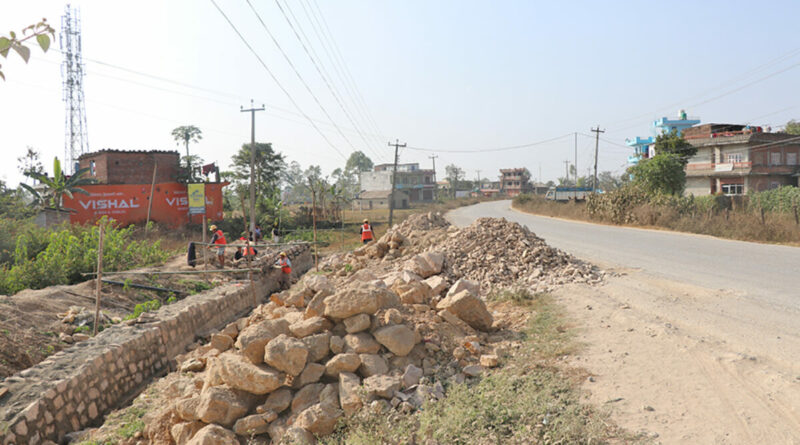
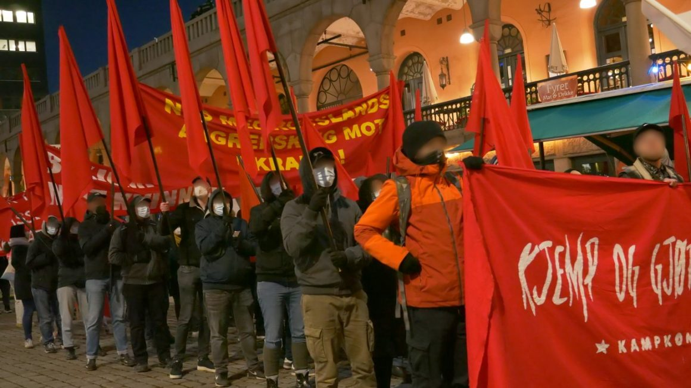
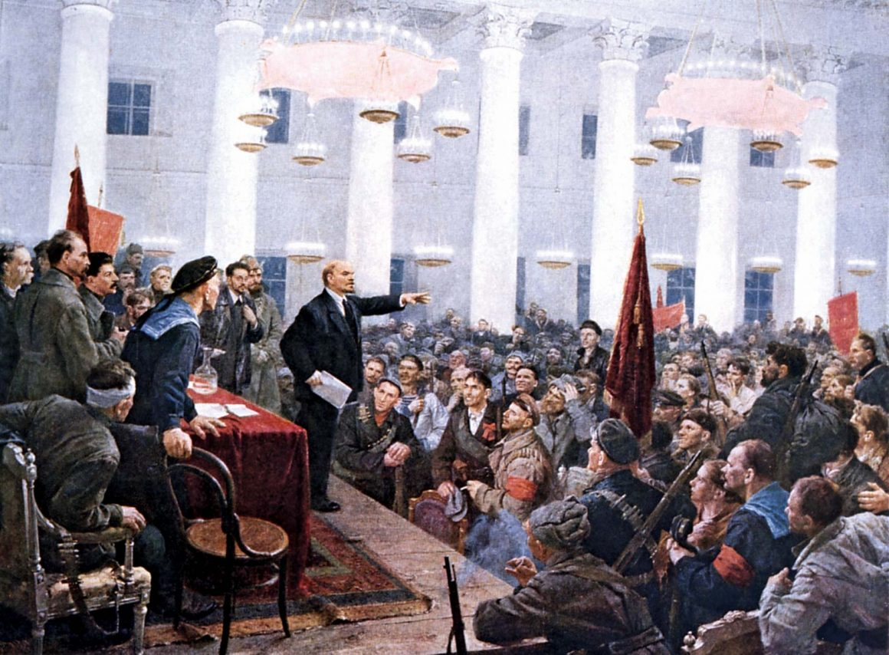
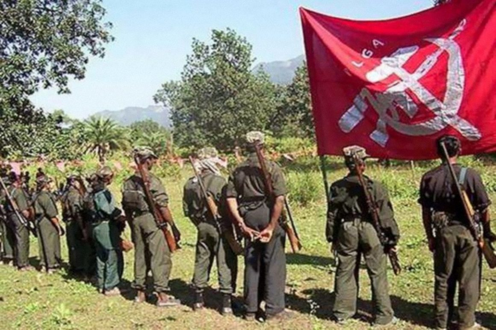
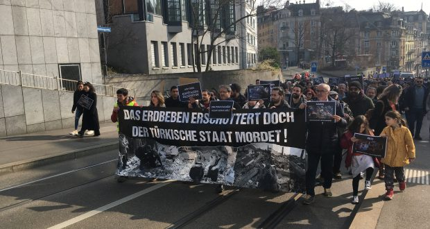
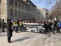

Marxism-Leninism-Maoism News
马列毛主义新闻
[This lan. PDF][This lan. ODT][This lan. MD][This lan. TXT][This lan. TXT LIST]
Please select your language 请选择你的语言:
Origin | 中文 | English
TKP-ML KKB: With the debris he created, we will destroy this system with our rebellion!
Author: kaypakkaya haber
Time: 2023-03-04T05:42:00-04:00
Description: From Chile to Afghanistan, from Iran to Colombia, from Egypt to Argentina, from India to the Philippines, from Armenia to Rojava, from Poland to the streets of Turkey, to the streets, the squares and the women and the LGBTI+ s International is our consciousness of salvation.
Images: ['tkpmlkkbon-678x381.png']
 2023 March 8, exploitation, oppression, violence increases, in particular, especially on the women's front of the struggle to raise the acceleration of the acceleration of the acceleration of a heavy destruction or wrapping, re -stood up, free future steps and decisive.
2023 March 8, exploitation, oppression, violence increases, in particular, especially on the women's front of the struggle to raise the acceleration of the acceleration of the acceleration of a heavy destruction or wrapping, re -stood up, free future steps and decisive.
It is certain that we have undergone an important process in the history of the date of March 8, which is written with the blood of workers with the blood and crowned by communist women as a day of struggle and solidarity for all working women. For the last decade, there is a wave of rebellion of a few as a proof of how strong women are together. In the last period of this wave, one of the driving forces of the Kurdish woman Mahsa Jina Amini'nin Iranian murder network was massacred after the murder of the rebellion. All over the world, women, in their own language, "Jin Jiyan Azadi" by saying that both Kurdish, Azeri, Persian diversity of the Iranian women took the hand of the women in Iran, and became part of the women's women in Iran, as well as making them an important wave of rebellion. Women's solidarity and struggle are becoming and radicalized, and an international women's resistance evolves into the vemcadle.
Fascist Turkish State, with the earthquake was destroyed by the people!
The earthquakes based on Maraş on February 6 and the ones that took place have once again revealed the enemy of the Turkish state. In the earthquake regions, aside from recovering those under the debris, the earthquake victims and threatening; “Where is the devlet? Then, when thousands of people are still on the streets, we learned that the Red Crescent made a tent trade. While the female enemy AKP-MHP power was threatening and declared a state of emergency, our people were trying to solidify their wound.
Obviously, the real perpetrator of the transformation of the earthquake into a massacre is fascism, and he carries out campaigns under the name of “the disaster of the century ,, hoping for social media restrictions, tries to prevent help, and as they do after almost every massacre. is referring to. The aim is to conceal the dimensions of the massacre and to cover the crimes. This state is the enemy of the people with its power-conservation and thousands of faces!
In order to see that the Turkish state is not only a hypocritical but a thousand -faced people, it is enough to look at the earthquake that directly tens of thousands of people who have lost millions of people. On these thousands of hundreds of states in Cizre, Sur burned the people with chemicals and on the walls “ _Aşk is in the basement, we see the writer, after massacring Ekin Wan, we see those who exhibited the body, and those who wait for the funeral of Taybehan's funeral for days. We see the judicial system who has published his torture videos with enthusiasm to the guerrillas, who burned his own funerals, who attacked mine workers for their friends after the Grizu explosion, and those who raped the children and those who raped the children. We see the perpetrators of Ceylan, Uğur, Roboskî, hundreds of thousands of people who have been massacred by the fascist attacks on refugees and immigrants, Alevis, LGBTI+s. We see racist mafyhabozuntular, Musa Orhan, the murderer of Ipek Er, the legitimizing children and foundations, the communities, the communities… We see the slogan “_Hükümetista” rising from the debris, “_ _ gynegi We see you all!And we will ask for an account from all of you!
This is the source of the fear of the Republic of Turkey with all its institutions and clicks. The will of the people by wrapping their wounds with the revolutionaries, the will of the feet under the wreckage to the feet and the will to ask for an account… As a result of the movement of nature, whether against the results of the direct attacks of the system, whether they are afraid of breaking the fault lines against the system against the system. Because they have lived many times since their establishment, they have returned from the brink of death many times. For this reason, the earthquake zone, the aid trucks, the rescue teams before the state terrorism; He strives to damage the rightful reaction by proclaiming a state of emergency; With racism, looting-talan rumors, they enter into a superior superior in order to prevent the robbery and plundering of the robbery and pillage that he has established with the Media, which does not recognize boundaries in infamy. We will not be saved!We will liberate the whole world with ourselves!
The rent system, which has emerged with the earthquake, contains heavy results in terms of all masses of people, but in particular women and LGBTI+s. Ataerki Veheterosexism, most of all in such unusual situations of the middle of the middle. After the destruction in the earthquake zone, women cannot benefit from the help of Velgbt+s, it is difficult to meet their needs by entering the order of help with men, albeit small, leaving a more unprotected against gender -based violence, mainly unprotected to the gender -based violence. We have a new breakdown in which the fatwas where the fatwas in which the girls who lost their families may be “spouses ına to the“ foster family ,, hygiene materials were seen as “luxury ve and even a pad for women, and the life of young women who were thrown from the KYK dormitories and left on the street are in danger.
Long story short; The system, AKP-MHP government to women and LGBTI+Laravar nothing, on the contrary, we have lives from us. The parties standing in front of the so -called Busistem can give us anything other than empty promises!They also steal our hopes by aspire to this rent system!The female did not stop their murders, they cannot stop!They did not stop, harassment, rape, they cannot stop!They didn't have children exposed to abuse, they can't stop!We will only say goodbye to all this!As women and LGBTI+s, the only way of our salvation is that we are repeating once again that we will create the free future we will create with our own.
It is one of our most urgent duties to turn our pain into organizationalism and struggle and anger in the face of the system that “the victim”. The days of struggle are waiting for us, where we will organize the salvation of women against the layer exploitation of women Velgbti+s. During these days of struggle, our 8th of Martless of our comrades, Meral, Cahide, Cahide, Sefagül, Guzel, Zülayha, and the unity we cannot count, the awareness of the struggle, freedom, freedom.From Farplala to ETF Tekstil, from Özsüt to Amazon, Migros Warehouse Nova Plastik’etum will be more advanced on March 8 on March 8. On March 8, we will make our self-defense on March 8 with the experience we have gained in defending our living in Manisa, Kirazlıyayla, İkizdere, Adıyaman. We will organize our anger growing with the earthquake on March 8 with enthusiasm to destroy the patriarchalhexist state.
While wrapping our wounds and enlarging solidarity, we will accelerate our steps towards the free future of female Velgbt+s with March 8!
Let's strengthen each other and our struggle and ran in the patriarchal heterosexist states.
8 March 2023 to promise: the female enemy will destroy all the powers!
We will transform our I into rebellion and ask for account from female enemies!
For all women who are essential, exploited, ignored, massacred, March 8’SOKAĞA!_
_ LIVE OUR PARTY TKP-ML, LIVE KKB!_
TKP-ML Communist Women's Union
March 2023
39
News Source: https://www.kaypakkayahaber.com/haber/tkp-ml-kkb-yarattigi-enkazla-birlikte-bu-sistemi-isyanimizla-yerle-bir-edecegiz
One year after the aggression to Ukraine follow the preparations for imperialist war
Author: maoistroad
Description: By labor revolution · 2023-03-04 ...
Time: 2023-03-04T09:15:00-08:00
Images: []
By Workers Revolution* 2023-03-04
On February 24, one year of the aggression of Russian imperialism Aucrania was completed. About 250,000 workers have died of shots and bombings to bothLed the front for the benefit of the Imperialists of the East and West, complaining the killing self -proclaiming defenders of freedom, hillside and world peace.
A year after the killing is initiated, it is clear that war in Ukraine is a confrontation between Russia and NATO. Ukraine is now the most important scenario of the inter -imperialist dispute, together with the aggression wars of the Peoples of Palestine, Syria, Yemen ... to which the operations are added in the Southeast Asia, in the northeastern of Africa and laproliferation of military bases of all the Imperialist bandits endistintas parts of the world, which has become a polvorín about to end in the dispute for a new cast to resolve the crisis of the dying system.
The possibility of a nuclear war has ceased to be a latent danger to seek in a real threat to the existence of world society and washed on the planet. The latest statements, announcements and maneuvers of American imperialists, of the European Union, of the Russians and Chinese nodejan doubt that they are willing to destroy everything and correspond to them alproletaria and the peoples of the world prevent the killing and destruction of the revolutionary struggle.
The proletariat and the peoples cannot fall into the deception plotted by Susenemigos, third in favor of one or another imperialist as advisable by the bourgeoisie agents within the labor movement. All imperialists and their lackeys talk about peace but reinforce the articist industry, increase their arsenals and mobilize their huge deguerra machines preparing for a new war of prey, for a new distribution of the world already distributed. Neither Putin and the Russian imperialist bourgeoisie is less genus that Biden and the Yankees imperialists, nor is it less criminal the socialist bourgeoisie European democratic than the Chinese -imperialist bourgeoisie. All are the worst terrorists, dictators and bandits, aggressors and village looters, and destroyers of nature.The proletariat condemns Russian aggression to Ukraine but does not support Yankee Pro -Imperialist Suburger. The internationalist solidarity of the proletariat is with the Ukrainian people and not with their native and extreme enemies. That is why his slogans have been Russian Deucranian imperialists!Out of Eastern Europe!Be imperialists of the world!
Likewise, in the face of the new climbing that the imperialists prepare in Sulucha for a new cast of the world, it is necessary for the proletariat and the peoples of the world to organize and mobilize revolutionly against Laguerra. Not with the hope of convincing the imperialist bourgeoisie and suslacayos of the oppressed countries of what a nuclear war would mean for the world -world society and nature, but as part of preparing its forces to prevent war and slaughter with the proletarian revolution or to transform the Imperialist war in revolutionary civil war Contracars dominant classes in each country.
The mood of the workers against the war expresses the indignation against the preparations of the war, whose consequences are already manifested in the real reduction of the Salary, the increase in the products of first necessity and in Europa in Europe the shortage of energy. The duty The communists is to take advantage of this status to raise consciousness in the face of the need to prepare the guerraracivil against the bourgeoisie and its state.
Likewise, it is up to the communists to move forward in the construction of the working class party in each country as part of the International Communist Lanueva, to guarantee the revolutionary direction of the movements that will continue to be presented as a product of the deep crisis by the one that crosses imperialist capitalism , whose agonized state and endescomposition demands the triumph of the world proletarian revolution and the instrument of socialism to guarantee the survival of society to impedir the destruction of nature.
Imperialists prepare for a reactionary and the proletariat prediction and the people of the world must prepare to defeat them with world proletarian larevolution.
Executive Committee - Communist Obrera Union(mlm)March 4, 2023
News Source: https://maoistroad.blogspot.com/2023/03/a-un-ano-de-la-agresion-ucrania-siguen.html
PC March 4 - Editorial - Meloni's visit to India
Author: fannyhill
Description: Meloni's visit to India was important and unlike the previous releases of the lady in other international leaders and in ...
Time: 2023-03-04T12:01:00+01:00
Images: ['download%20(1).jpg']
.jpg) Meloni's visit to India was important and unlike the lady's previewing exits in other international leaders and meetings with other heads of state and governments, this time the visit was really very well. Very well for Italian imperialism, for lesue industries; Well for the geostrategic interests of imperialism and Italian imperialism in the area so important today in the world.
Meloni's visit to India was important and unlike the lady's previewing exits in other international leaders and meetings with other heads of state and governments, this time the visit was really very well. Very well for Italian imperialism, for lesue industries; Well for the geostrategic interests of imperialism and Italian imperialism in the area so important today in the world.
The thing was not obvious, given that the Italian/Indian reports had been Statenne by events such as those of the Two Marò Assassins of fishing eons linked to a practice of orders, first of all military obtained with a string of corruption and underworld, which is Also very usual in the Indian bourgeoisie and its governments, it is now no longer exactly the role of the role that India assumes and even more wants in the contexternament.
It can be said that with this visit one page has closed and the other has opened up.
All this is far from being a particular merit of Meloni, even on this occasion it is
He seemed 'the right man at the right time'.
He presented himself and well combined being at the service of many masters to culture the specific interests of Italian imperialism.
It came to the appointment first of all at the service of imperialism which has all the interest in consolidating all types of relationships, first of all military and geostratext, with a strong basis in the interests of the area which is actively committed to deploying the 'India against Lacina and to place India in a useful position to the current war -of -the -hook aimed at making Russia's making/defeat.Therefore, it is within the framework of the policy of US/born imperialism in the area of the real imperialist interests in the dispute with China who has moved Lameloni.
He was able to play this role also based on it on the ideological effinitation, which did not exist with previous Italian governments, given the naturalfascist, fascist cleric and anti -medicine racist that unites his government of the Ddel Fascist regime induced ways. This favored in this case the good concerned reception of the Indian regime.
But, of course, if this has been the geopolitical, strategic interaction of the visit, this time It was the interests of Italian imperialism that were married, set and practiced , an unclean not certain of Europe but of open competition with others European States, still better placed in the economic ties with India; Germany, France, to a lesser extent England who clearly with India lives a historically ambiguous relationship with a real "gianobifronte".
In this context, Meloni and his government were able to act from GranCommisinnna first of the war industry, energy, Leonardo, Fincantieri, Enel, Something led to the planning of massive committed in the field of war industry, with the further passage of a vast plan of binders, joint maneuvers, training, training, which actually also have the military entry of Italian imperialism into the international contest areanella. In this sense The strategic partnership that sanctions the visit is not a linguistic ritual that often characterizes meetings, but a true and significant fact
The Italian bourgeois press in several articles has already listed the whole military economic agreements defined in the visit(See article Annex Sole 24 Ore). Su questo torneremo in un altro articoli nei prossimigiorni.
Quali le conseguenze di questa visita e di questi accordi nella lotta diclasse nazionmale e internazionale?
Any strengthening on this ground of Italian imperialism and its action is a strengthening and consolidation of the government on an internal level, which is chenaturally affecting the internal front in the clash of the traprotoriato and bourgeoisie class. This also involves the increase in the weight of the Indianel our country and the internal contradictions to Europe.
On the side of the proletarians, however, this visit is also a great opportunity to permit the importance of the class struggle and the war of the people who surpas in India against the bourgeois regime, ally and servant of imperialism and the indispensable unit that can and must exist Between the proletarians and popular lemasse in Italy and the proletarian and peasant masses in the fight.
We have more and more Municipalities enemies, we fight against governments between their inalleati and of the same nature. and this is a good for the class struggle and the internationalism.
It is known that the Italian Marxist Communists Italian Maoisti have a close, consolidated and indissoluble bonds with the MLMindian communists and that we are promoters and entertainers in our country and in the world of a support and solidarity with the struggle and war of people incurred in India, led by the 'Naxalites' of the PCI(Maoist)It is clear for us that every strengthening of the link between the bourgeoisia andiale and the Indian bourgeoisie makes it deicomuni enemies, and this is well inside the struggle for the proletarian and socialist revolution in our country and world sushcala.
Communist proletarians/PCM Italia
March 4, 2023
News Source: https://proletaricomunisti.blogspot.com/2023/03/su-india-italia.html
The Turin Court of Appeal ... an example of legal rape against women
Author: fannyhill
Description: "He left the door ajar, invitation to dare", acquitted presumed rapist: but now the Cassation orders a new trial the judges canceled ...
Time: 2023-03-04T12:21:00+01:00
Images: []
"He left the door ajar, I invite you to dare», acquitted allegedostuper: but now the Cassation orders a new trial
The judges cancel(postponement)The ruling of the Turin Court of Appeal
_ «It cannot be excluded at all that the boy, The young woman gave hopes, being accompanied to the bathroom, being leaned Ifazzoletti, keeping the door ajar, openings certainly read by the accused as an invitation to dare. I invite that the man did not repeat himself, mache then the girl is unable to manage, since a little skidded and attacked by thepanic»: With these motivations, the Turin Court of Appeal had acquitted an alleged rapistra_ma today(2 Marzo)The Court of Cassation canceled the sentence, arranging a new trial. At first instance - in front of the gup - the young man was stationened with abbreviated rite(2 years, 2 months and 20 days), as per the request for PM Fabiola d'Errico, then the acquittal had come in second.
CONTAINS THE AGGLEMENT IN A ROOM OF THE HISTORICAL CENTER
The episode happened in the bathroom of a place in the center. Yet, there was not only the victim's story, made with "declarations repeatedly reiterated concurrence, precision and consistency, as well as in tune with the additional additionalisults acquired", summarized the motivation of the gup. There was also the zipdei trousers of her torn, detail that the appeal sentence, signed by the president of the fourth
Criminal section explained as follows: "The only indicative data of the alleged abusopre would be considered the broken zipper, but the man did not deny the young people of the young woman, which is why nothing can exclude that the exaltation of the moment, the hinge, of modest quality, has been under forcing ». In short, "the fact cannot be understood as an accusatory preparation by the General Prosecutor's Office".
News Source: https://femminismorivoluzionario.blogspot.com/2023/03/la-corte-dappello-di-torino-esempio-di.html
PC March 4 - Large anti -fascist demonstration in Florence
Author: maoist
Description: Thousands of people (according to the organizers more than 50 thousand, for the Ventimila police headquarters) in the center of Florence in solidarity with students ...
Time: 2023-03-04T18:53:00+01:00
Images: []
Thousands of people(According to the organizers more than 50 thousand, for the police team) In the center of Florence in solidarity with the students of the Liceomicilangolo attacked attacked, on 18 February, by militants of the right -wing Diet Movement of Student Action. Many students, professors, masters, principals. And many ordinary people who wanted to be there. Uncorteo also in defense of the principal of the Leonardo da Vinci High School Annalisasavino, against whom Minister Valditara had launched after Lapreside had written a letter to his students in which he invited them to do not do not do the risks of the new fascisms. She was also at the procession, together with her students and teachers.
Coirs for Alfredo Costitomolli demonstrators are singing " Bella ciao " in the streets of the center. In Piazza D'Azeglio you hear choirs in support of Alfredo COSTITO : "Outside Alfredo from 41 bis ".
Teachers and pupils, they underlined the need not to leave space alphascism. A student of the Castelnuovo high school asked that the heads of the other the same and CasaPound in Florence are closed by the authorities
He did not protect himself only against the aggression of the Michelangiolo high school. The signs and banners showed the dissent of the pearl protesters massacre of migrants in Cutro
Florence Anti -fascist
Just provocations!
Today in Piazza D'Azeglio at 2.00 pm!
Throughout the day on Friday we witnessed small provocations from the police headquarters in relation to the procession of anti -fascist Florence that Dapiazza D'Azeglio should have reached Piazza SS. Annunziata.
We have witnessed pressure, program changes and threats to ban quasischizophrenic.
However, we know that they act according to a logic at the police station. We are looking for it to choose to choose on what ground we want to measure ourselves and where to invest our energies.
We have declared that we want to be in that square to develop a political one political with its content with particular attention to the worship of relationships and relationships capable of growing the possibilities of unamobilization that you look at tomorrow and does not end in the "big event".
We believe that there will be thousands of workers and workers, exuduating students, willing to listen to our words.If the police headquarters wanted to push us in a direction different from what we chosen, creating the conditions for an attempt at ecru -crime isolation, we respond with the collective intelligence of Storesul terrain that we had already declared.
We relaunch the concentration of all the anti -fascist Florence at 14.00 in Piazza D'Azeglio where we will wait for the procession that will start from Piazza Ss.Annunziata by arranging the clip and then enter it.
Anti -fascist Florence.
News Source: https://proletaricomunisti.blogspot.com/2023/03/pc-4-marzo-grossa-manifestazione.html
PC 4 March - The Turin event for Alfredo - Images
Author: maoist
Description: None
Time: 2023-03-04T19:01:00+01:00
Images: ['img.jpg']

News Source: https://proletaricomunisti.blogspot.com/2023/03/pc-4-marzo-la-manifestazione-di-torino.html
PC 4 March - Crotone: the victims rise to 70. Saturday 11 March national event "Never more dead in the Mediterranean"
Author: maoist
Description: The official victims of the massacre of migrants in Cutro, off the coast of Crotone, went up to at least 70. Rescuers have anal ...
Time: 2023-03-04T19:28:00+01:00
Images: ['crotone.jpg', 'images.jpg']
 The official victims of the massacre of migrants ACUTRO, off the coast of Crotone, went up to at least 70. The rescuers have in fact found a child's body, of which neither age nor identity is still known.
The official victims of the massacre of migrants ACUTRO, off the coast of Crotone, went up to at least 70. The rescuers have in fact found a child's body, of which neither age nor identity is still known.
In the meantime, the network of 26 February was born in Crotone, a civic mobilization, which over 200 associations. At the center of mobilization the request for "justice for the families of the victims and the survivors of the washers lying of Cutro. Urge - underline the members of the Network - Politics
European Municipality of Rescue, Reception and Asylum. As third sector entities, unions, associations, committees, NGOs, schools, free towns and citizens in a loud voice that the investigating authorities soon make egiustizia clarity. In a note, the network 26 February underlines: "We continue to take support for family and survivors, and finally pretend to be a common European common rescue, reception and joint asylum, among all countries. And that there are no more disparities in the 'Reception of refugees, from anywhere in the world and war run ".
** For days the adherent days have been presiding over the Palamilone, where the coffins of the victims of the tragedy have beenh. Italy cannot and do not want to more be the cemetery of Europe "." In addition to the pain, enormous, - continues the 26th February network - we also record the absurd rebound of responsibility between authoritarian authorities, who could and had to give the rescue signal in the Didomenica night and also the institutional void in giving immediate and concretely answers of the family of the family. In these days they are witnessing helplessly at the rows of desperate relatives, forced to have to recognize the voltids of them dear. On many of the coffins there is only one code , not even a name to which to which to ».
Today, March 4, in Crotone the first public appointment, a garrison in front of the Prefecture to ask loudly: "Never more died in the hectored". A national event was launched for Saturday 11th always in Crotone.
laws on the blog of today's proletarians today

News Source: https://proletaricomunisti.blogspot.com/2023/03/pc-4-marzo-manifestazione-milano.html
Italy: 8 March women's strike: the proletarian avant-garde trenches against bosses and the new fascist government
Author: fannyhill
Description: In this March 8 we make the cry of women, workers, workers who no longer make it strong, who have lost their work ...
Time: 2023-03-04T21:00:00-08:00
Images: ['download.jpg']
 In this March 8, we make the cry of women, workers, workers who no longer do it strong, who have lost their jobs, who never praise, who are discriminated against in the factories, they receive lower wages male workers, and suffer attacks To their rights as women, prisoners who take every day in the square and instead of receiving responses and wages and wages receive blows and complaints, of the ultra -priest.
In this March 8, we make the cry of women, workers, workers who no longer do it strong, who have lost their jobs, who never praise, who are discriminated against in the factories, they receive lower wages male workers, and suffer attacks To their rights as women, prisoners who take every day in the square and instead of receiving responses and wages and wages receive blows and complaints, of the ultra -priest.
On March 8, we want to be an important avant-garde, opposition, determined, visible women against the masters, the Governomeloni, reactionary, clerical-fascist, with a sexist person.
We have already done this on November 26th. And it is enough a banner Inclodi Meloni was called "fascist" to unleash both the police and theprime tried to seize our banner, succeeding for the mass of mass of mass in the procession, then after the event he stopped our companions, workers; be the press.
but the 'March 8 is strike!And with the strike, starting from the rampary places, let's say it is clear that it is a class struggle, that loads the whole condition of women, first of all of the more proletarian ones and oppressed; It is a clash between the barbarism of this social this capitalist and our bi/dream that all ourvita must change. **
When women struggle always bring a more gear, because we are not only miserable and today more and more difficult improvements but want to revolution!
Meloni's government raised the black flag of "god, homeland, family" ... and children, because women are "weighed" and can only receive elastic on the basis of the number of children they have and who do for IlCapitale and today for the imperialist war. And they are preparing soon adapting the abortion heavily, which always accompanies the double oppression and modern Middle Ages for women. Today this black flag is ideology to impose misery, war, attack on work, with the inevitable increase in feminicides.In this March 8 we bring the struggles that we already are doing, from the workers' Fabbrica Beretta to the cleaning workers, of the cooperatives; showing clear for what we fight. Also this year they come out of the small bourgeois platforms in which the "shopping list" is made. But the platforms are the result of the struggles, of the needs that already lelavrators, the unemployed, the girls express; It is a platform of "blood, of fatigue", but also a platform of courage that we are the one for whom we.
The workers, from factories to precarious jobs, say that it no longer do, physically, mentally; The owners are destroying them pearls heavy conditions at work and out of work, for continuation, oppression up to harassment, sexual violence on ramparding places; while their wages become increasingly miserable. Then they return to thecase and find on their shoulders all the weight of domestic work, care, assistance, the effects of cutting social services, caravisa cheauuumento also now as the effect of their dirty imperialist war.
What does this war mean to women to say it is said to women. But for women, who to fully feel united to women who are under the bombes of Ukraine, as with the Russian women who see to die to die thousands of children for the profits of the masters of the imperialist powers, thisguer means outside and inside the Our country, more misery, more oppression and as in every war, more fascist "muscle" humus, male chauvinist with ideological lapropaganda of "God, homeland and family" to which women are defoned.
All this is in March 8.
But it is also and above all the strength of women when they unite Eavanzano in understanding that this condition is not inevitable, but that it sipuò and must be transformed.
Women need to be more united, more organized, because this is the strength.
We want to be "dangerous", we want the newspapers, as they have made on November 26, they write worried that we "threaten Meloni ...". Well, yes we would like to be much more towards those who ruin life.
Revolutionary proletarian feminist movement Italy
News Source: https://maoistroad.blogspot.com/2023/03/italy-8-march-womens-strike-proletarian.html
Communist Association's fifth national conference: on the international mode
Author: 'KOMMUNISTISKA FÖRENINGEN'
Time: 2023-03-04T95:00:00-04:00
Images: ['PKP.png']
Categories: ['Featured', 'Nyheter', 'Teori', 'Uttalanden']
 Location international
Location international
Since the end of the 19th century, people have lived in the era of imperialism. We have lived in the era of the Great October Revolution in 1917 in the era of imperialism and the proletary world revolution. These two tendencies, imperialism and proletarian world revolution, constitute the world situation more than a hundred years later. The development over the past decade has basically consisted of imperialism -wise more increasing crisis and decay and the increasing lighter views of the proletarian world. The world reaction has tried in various ways to stop the river, which consists of national liberation matches and revolutions led by communist parties, mainly when the folk wars the IFIFippines, India, Turkey and Peru. At the same time, the majority are fought for national liberation and national independence towards imperialism and contradictions in the imperialist countries are increasingly being tasted. Between the imperialist powers there are all increasing and devastating contradictions.
At the world level, according to the International Communist Association's_ political and declaration of principle, there are four basic contradictions. These are:
-
The contradiction between imperialism and the oppressed nations
-
The contradiction between the proletariat and the bourgeoisie
-
The contradiction between the imperialist powers
-
The contradiction between capitalism and socialism
A review of these contradictions is explains our picture of the position on the interior level
_ The contradiction between imperialism and the oppressed nations _If we continue with Brazil as a telling example. Imperialism exploitation of the country continues, one fifth of the state's revenue goes to deposits on Brazil's foreign debt. At the same time, in a country where Covid-19-ravaged at its worst, staff worked without protective equipment, face masks and medical resources. The country's favelas stood without water and the 70 million brasilate who were classified as "financially vulnerable" were not covered by any of the land's few efforts. The country's landlord used the situation to expand the devastation of the Amazon. Half a million is threatened to be evicted from their farms or from the townships. Corruption in the country is also a clear sign of how the state companies are predatory for various fractions of the agency, which allocates each other periodically, with the military's explicit or passive support. Corruption is in -depth and the scandals shake all parties. The military repression is divided, half private under the rule of landlord, half police military. The first instance feels most of the peasant farmers in the countryside, where the police act as one of the provider -based support. In the cities, the police repression is most clearly in the favelas, which periodically execute the residents.
The in -depth economic and political crisis in Brazil is reflected in the fact that it is a criminal offense not to vote, so only half of the person entitled to the country participated in 2022. The active or passive boycott thus covered half the country. At the same time, the revolutionary organizations are growing: the union of the poverty farmers, the front in defense of people's rights, the people's women's movement, the people's student movement, the Workers' Union, and others. What gives Brazil a special character in the current period in fact that Brazil's communist party is reconstituted and has taken the context of the people's battles against imperialism and bureaucracy capital.
Of course, this situation is unique to Brazil, but throughout Latin America Hardet has been raised and battles. In Chile during the period before the vote Omen new constitution to replace Pinchets Constitution, where the repression was very hard and filed protesters. The Mapu chief's struggle for the earth has also hardened. In Colombia, the movement continues to occupy and redistribute the earth.Recently, Iran has also undergone extensive erects, which shake the country. The protests, which were initially aimed at the country's morality police, became everywhere more extensive and scattered, finally aimed at the entire state.
Ukraine has also highlighted the international situation. Ukraine's defense against Russian invasion is justified, but the complicated situation in one -oppressed, semi -colonial, country, gives clear expressions. The country bureaucratic capitalist regime has shown very little interest in the country's defense, instead it has used the opportunity to enrich the support of the financial support from abroad, continue centralization and sale of the country's industrial base and drive for Ukraine's entry of the Union. At the same time, Ukraine's people may endure the suffering and the price war. The state finances hated fascist militia as the unity of the split people towards the Russian attack.
The world's four ongoing folk war is the highest form of anti-imperialist struggle, it is the fighting that keeps imperialism the rod because they are crushed, refuses to be called and refuse to give up. Military support from imperialism to the Philippines, India, Turkey and Peru has not succeeded in the Swedish Companies, led by the Communist parties. Instead, it becomes a black hole of resources for the imperialists, the more they put in, the unstable becomes their own order.
Globally, we see that the protests do not silence, that the organized fighting concepts and that the struggle for national liberation is increasingly led by the Maoists. The tendency worldwide is, as chairman Mao put it, that _ "country naillo his independence, the nations want their liberation and peoples want revolution!"_
_ The contradiction between proletariat and bourgeoisie _In the oppressed nations, the contradiction is mainly within the contradiction Folket-bureaucracy capitalism, where the proletariat is the leadership of the people. It is understandable when the factories and the large workplaces Idsely oppressed nations are usually owned by imperialist companies. The struggle for complicated rights, for wage increases, for workplace protection, becomes a fight against the imperialist company that does not doubt to use violence to fight strikes and the workers' organization, through the police or security companies. At the utmost level, this contradiction within the larger contradiction-oppressed nation-imperialism is expressed by the fact that The proletariat is the leadership of the detailed revolution, when the proletariat sent its best sons and daughters to politicize, mobilize and organize the peasants, mainly the poverty farmers' struggle.
_ The interimperialist contradiction _
The imperialist powers, mainly where the United States, such as the world's only hegemonic superpower, has never formed a unit. They cooperate and are in mascopimed each other periodically and then counteract or war against each other. There is no ultra imperialism or any permanent imperialist blocks. There are only temporary alliances that can carry or burst. The recent years have seen countless examples of interimmeristic battles. Britain's bait from the European Union, the United States campaign to incorporate Sweden and Finland in NATO, as a guarantor against Russia, the many olic lines within NATO towards Russia. The existing interim performance has been found in Ukraine. Yankee-imperialism's support Adukraine has amounted to multi-billion amounts US dollars, both in direct financial support but primarily in military assistance. Other imperialist powers, Sweden Included, have sent huge resources to Ukraine, so much to German Ministry of Defense that Europe's ammunition stock was threatened to be emptied. Despite the enormous liver, the war has leveled downtime and Russia's military capacity does not appear to be the rash.Revisionists speak warmly about the threat of a world war. This threat existing arm is not in the foreground of the revolutionaries' reasoning about the world situation or the part of the all -imperial contradiction. Instead, the Viat Protects the Imperialists' struggles between themselves constitutes a scope for action as a whole and can and will be exploited by the world's revolutionaries. As Maoists, we always focus on the revolution, the not world war or the reaction.
_ The contradiction between capitalism and socialism _
This contradiction is of its own nature, as it exists mainly latent in the world day. There are no socialist states and no socialist campsite. There are areas where new power is constructed and there is a contradiction is expressed on the ideological and theoretical level. This contradiction is found in the senses of all Communists, Militants, Combatants and masses somed by the ideology of the proletariat and struggles tirelessly to make this ideology realize and realize this ideology. It expresses itself as unubjective force that can affect objective development.
Marxism-Leninism-Maoism has made great progress in recent years, in the world as a whole and in our immediate area. Maoism has been fortified as the foundation of proletarian organization in Norway and Sweden, 2019 and 2022. The Maoists Haranvance in Finland and Denmark. The Maoists in France have made up fellow split and screaming to unite again. Brazil Communist Party is reconstituted. The International Communist Association has been founded after 40 years of determined struggle for unity undermaism. The struggle for the unit has been long and laborious, but has contributed to greater development of the subjective forces worldwide.
Objectively, we see that imperialism is in a decaying and furious crisis, that it is also undergoing extensive crisis that opens the preliminary crisis and the people of the world to advance. Unity on the basis of Maoism has taken many steps forward and this will contribute to leaps in the fight against imperialism and for communism. Imperialism is increasingly unsustainable, the Communists have realized this, the masses realize this more and more. With increasingly stronger Marxist-Leninist-Maoist parties that are reconstructed or constituted, the current crisis of imperialism will be its last.
News Source: https://kommunisten.nu/?p=14187
Communist Association's fifth national conference: on the national position
Author: 'KOMMUNISTISKA FÖRENINGEN'
Time: 2023-03-04T97:00:00-04:00
Images: ['PKP.png']
Categories: ['Featured', 'Nyheter', 'Teori', 'Uttalanden']
 Location in Sweden
Location in Sweden
Today, 2023, the situation looks both the same and at the same time different as when KFRDUSS in 2014. Equally in the sense that there are still no any -revolutionary parties or organizations, in addition to KF, with the socialist revolution as a goal. If anything, the differentiation between the auditist parties and the open bourgeois has disappeared all the more. The bourgeois parties have become more and more openly reactionary in the last 10 years and it is most clearly stated in issues of police, military and immigration, the parties competing for whose budget should allocate most to these issues. Although not to cooperate with or provide concessions to the Sweden Democrats have been suffocated.
_ the classes and class conflicts _
The class contradictions have hardened in Sweden in recent decades due to the aggressive class war of the bourgeoisie. Today, we see a partial revisionist parties and organizations that, in response to this sharpamotation, set slogan that hints at returning to Mersocial Democracy or "Communist" parliamentary alternatives, such as the Ombudsman Party Communists, with more welfare, without understanding that the gentle cooperation spirit that sold the class struggle In Sweden and has led us in Ditvi today.Billionaires have not created their wealth through productive investments in the industry - GDP per capita and productivity has stagnated in 2007. As Marx explained, there are few opportunities for profitable investments when the capitalist system is in an equivalent crisis. The crisis is, among other things, a result of the production exceeding the market's ability to absorb the goods. Growth Capita was practically non-existent between 2007-2014 and was 0.4 percent per year during the entire period 2007-2020. However, Nasdaq Stockholm has grown by almost 800 percent in 25 years. The stock exchange has had excellent results at a time when the real economy has had a hard time. It is very much speculated in new technology companies, which tend to be heavily overvalued both in Sweden and internationally. At the same time, Stockholm has the greatest number of so -called unicorn companies in the world, ie ioned start -ups that are worth more than a billion dollars.
Of Sweden's 542 billionaires, 70 have made their wealth in real estate. But they hardly have invested anything in the construction of much needed new cheap apartments. Instead, they have followed a modus operandi of:
-
A method that involves buying existing properties, raising the price and then reselling them.
-
conduct minor renovations of the apartments to justify huge rent increases(sometimes with up to 50 percent)- Renovation deeds or "renovation bills". Tenants who cannot afford to pay are evicted.
-
Buying public properties for renting them to schools, health care and care services, with rents that are many times higher than the original value of the properties.Another lucrative market that serves to ruin the proletariat is cheap loans without certainty, so-called consumer loans or blanco loans. The volume Osäkäklanco loan has tenfold between 2008 and 2018. They make up only twenty percent of the total Swedish debts, but due to the high interest rates accounted for 50 percent of the reimbursements of the loans. One in five customers Hoskonsumen Credit Company ends up with the debt collection company because they cannot afford the repayments.
An increasing problem that we have faced was the emergence of the secondary market, including housing where aspiring capitalists can rent an apartment, or worse a room, at usury prices. Just a look at some ads fromessa means that one is met by rental prices up to SEK 8,000 for a room that resident or 14,000 for a second in one of our slightly larger cities. These tenants, for us as communists, are how we can do a residential struggle under these pre -carrier conditions. Through threat to be able to be ejected on the street and without a collective gathering place(à layres guest associations)Being able to organize themselves, many simply take up the same struggle that someone with a first -hand contract dares to. These also have the opportunity to organize themselves in some kind of tenant association today. All of these struggles will require more combatable organizations that take up the struggle.Finally we have the gaming industry(casino). Här ingår företag som EvolutionGaming, som varit bland de tio största företagen som handlas på NasdaqStockholm. Företaget värderas till cirka 30 miljarder EUR. Andra företag somgör sina vinster på spelberoende är Bettson, Netent, Kindred och Leo Vegas.Det är så här den ruttna svenska kapitalistklassen tjänar sina förmögenheter.Att återgå till ”den gamla goda tiden”, med ansvarsfulla kapitalister ochpolitiker och en mer restriktiv centralbank är både falsk i bemärkelse att detinte går – likväl som den aldrig fanns. Det vi ser i dag är exakt hur enkapitalism i djup kris ser ut: superrika parasiter som tjänar på krediter,spekulation och spel, en extrem förmögenhetsklyfta mellan klasserna ochförhållanden som gör det allt svårare för proletärer och framförallt proletäraungdomar att klara sig.
Mot kapitalets offensiv finns inget centralt organiserat motstånd, men detspontana motståndet uppstår konstant som ett svar på densamma. I nuläget ärmassornas kamp lokal och utspridd i hela landet, men är tydliga tecken på enhistorisk lag; en motsättning har inte bara en sida. Kapitalets offensivbesvaras av proletariatet och massornas motstånd. Hyresgästkamperna ocharbetsplatskamperna på olika håll i landet är tydliga tecken på massornaskampvilja, som är en kraft som endast kommer bli starkare.
B LM och Paludan
I USA började Black Lives Matter-rörelsen som en protest mot våldet ochrepressionen mot svarta efter att en man frikändes i en uppmärksammadrättegång i juli 2013. Målet gällde en händelse i Stanford, Florida året innannär den åtalade hade skjutit ihjäl en 17-åring svart pojke vid namn TrayvonMartin. Reaktionerna på domslutet blev kraftiga och demonstrationer hålls utepå gatorna. I sociala medier delades hashtaggen #blacklivesmatter och enrörelse var född. Den svenska rörelsen uppmärksammades mest i juni 2020 dåtusentals personer deltog i en Black Lives Matter-demonstration i Göteborg.Det skedde även demonstrationer på andra orter i Sverige men den i Göteborg ärvärd att uppmärksamma då den innebär en avancering gentemot tidigare kamperoch att något liknande inte hade skett i Sverige sedan Husbyupproret 2013.Dessa demonstrationer skedde också under Covid-restriktionerna vid den periodnär de var som starkast och lyckades ändå mobilisera tusentals demonstranter iflera städer. 36 personer åtalades för våldsamt upplopp, sabotage motblåljusverksamhet, skadegörelse och våld mot tjänsteman.
_ COVID-19 _
The situation is also significantly different since the beginning of 2020 in the way that the world has lived through a pandemic in recent years, where only just over 23,000 have been killed in Sweden as a result of the poor handling and meals. In terms of the number of dead that have not been included in the officer statistics, this figure should be much higher. The Public Health Authority recommended early on “avoiding unnecessary travel and social events, staying away from others and staying at home" if you get symptoms, and to wash your hands regularly. In addition, "recommended persons over 70 years to avoid social contact" and visits to the elderly homes were prohibited on March 31, 2020. High school and universities went over for example on March 17 to August 2020; and again in December 2020. In the general public, schools for children under 16 remains open in addition to some local and detained closures in connection with the spread of infection(in school or community), based on decisions of the individual schools. Schooling is bonds in Sweden and no exceptions were made for children with parents irish groups or, initially, for children with family members with confirmed covid-19. Measures to prevent infections were not implemented in large extent or were not mandatory to the same extent as in second countries(with local exceptions).
Material chains that, even before the pandemic, were inadequate failed and one -developed staff had to work further to cover the holes in the Swedish pandemist strategy. Similar patterns are seen worldwide, where national health systems are fragmented and made incomprehensible. The record -breeding vaccine also resulted in profit maximization, where companies such as astrazenecas was revealed to hoard deliveries to be able to sell expensive contracts, which only applied over a six -month period.
Although Sweden is one of the few countries that has several high-quality health and population registers, there were major problems with the reporting of Covid cases, hospital intake and even deaths. This was not only due to limited testing, but also because the fall definitions were relatively strict and changed several times during the pandemic. There were delays on several weeks and differences between the official sources(Public Health Authority, National Board of Health and Welfare, Statistics Sweden). Det finns också farhågor omdatamanipulationer, särskilt av Covid-fall och dödsfall bland barn. Dettamönster av hemlighetsmakeri, mörkläggning och uppgiftsmanipulering fanns pånationell, regional och kommunal nivå – till och med officiella webbplatser(for example The government's strategy)was updated without changing "Date of latest update". For example, although several of the persons involved made statements that face masks were not needed, or even "dangerous" or counterproductive - the latter claimed that they always supported the use of them. The Swedish Work Environment Authority and the state epidemiologist even began deleted related emails that journalist convenient. Although this is illegal, it became practice to withhold information and delete emails among official authorities underpandemic-which led to a so-called "shadow management", since the risk of legal penalties is obviously very low for power holders. It is pointed out that this global crisis is not the result of a virus or a subsequent disease. It is the result of an economic system whose self-stagger Covid-19 revealed as inhumane.
_ Contract movements 2023 _These Rella deterioration for the proletariat is in no way offensive by the social democratically controlled trade union movement. The trade union movement has been centralized for decades and bureaucratized, which made it difficult for local strike initiatives. Today, central approval is required, otherwise the strike is declared invalid and strike support is not paid from the National Organization.Lo has also been very modest to the capital, as the trade unions are lasting fellow parties to changes in Sweden's strike laws in 2019, which willingly approved restrictions on the court to strike under the counseling agreement as to strike for a union outside the LO collaboration at a workplace where a LO union and the work buyer have written under collective agreement. The latter was obviously a targeted attack from the side of the independent union the Harbor Workers' Union, which emerged as an outbreak from the LO-Association Transport. The memory of the trade union is far -reaching Vendetta is too small. The trade union movement has thus worked actively to create the situation the proletariat is now facing - a situation where the single -laws are completely in LO's hands, which absolutely have no intention to exploit them. Their requirements in this year's contract operations are a salary increase of 5.5 %, which does not compensate for the prevailing inflation. LO runs pre -pay wage reductions.
At the same time, we can clearly see that the Social Democratic trade union movement has shifted itself in the foot with its power play towards outsiders, as well as drive to deprive the members of the unions their rights. Fewer stretch members vote for the Social Democrats and the pumps are more difficult to motivate LO's traditional financial support for the Social Democrats. Attention democracy loses influence is good - even if this void is not filled by proletarian ideology at present.
_ Sweden and NATO _In the ongoing debate on Swedish membership, the nuclear issue has played a insignificant role. By linking these issues, the bourgeoisie can argue that Sweden is in need of the protection that only NATO core weapons can, however unpleasant the threat of mass destruction than happens to be. Being against ENNATO membership then appears idealistic. In this way, they can avoid the mercelible questions about how a NATO membership should protect Sweden in practice. The basic questions, exactly what we should be protected from and whether NATO membership would make Sweden safer, however, remain unanswered. Not the most insistent among NATO friends seems to believe that Russia has capacity or interest in attacking Finland or Sweden.
The drive for NATO membership has also put the Swedish citizens in the uncomfortable situation to kneel before Turkish's bureaucratic regime, surrounding the situation by expressing other NATO countries and Sweden for concessions and support for their genocide towards the Kurds, and to fight the ongoing folk war. The absurd in the Swedish state -of -life became extremely clear when the cancellation of a doll imaginable President Erdogan threatened to lower the entire Swedish NATO membership. So much for the Swedish image ...
The idea of being in an imperialist alliance dominated by a country that has been the most common twenty years started most wars, consistently lying for the international community and legalized the use of torture would be a one -guarantee for international law is a difficult to digest statement. All the devastation, all the human rights crimes made by US and NATO-led forces, have made themselves guilty of the world over in favor of a simple contradiction between the Dento NATO and the cowardly Swedish alliance freedom. And no - Postrash's war crimes is not a way to legitimize Russia. This means that the United States and Russia are "the same". However, US illnesses are highly strength for the issue of Swedish membership. NATO's military, economic and political positions will be significantly strengthened if we join. Social Democrats strike themselves to show how Sweden as a NATO member will work for global disarmament of nuclear weapons. Change from - a parliamentary slogan we unfortunately know too well.
_ state repression instead of welfare state _The NATO connection involves a large -scale renovation and police work conditions and situation has been trumpeted to justify one -equipment and militarization there as well. Police's overwhelm, various internal records of, for example, Roma, their corruption(recently illuminated the Aftepotism scandal around Linda Staaf)And internal investigations that darken police crimes, disappear in the media noise. The Moderates, the Government's leading party, have driven for visitation zones, where residents of proletarian suburbs are visited according to the whims of the police force. At the same time, there is a rejection from leading politicians that the military should be deployed as support for law enforcement and the prison system receives greater grants for expansion.
During this time of fierce debate on crime, shooting violence, crime and sentence, it is pointed out that the judicial system has on most occasions been caught to participate in the crime they say they fight. Police have been hare -lossed dark for police informants who commit violent crimes, they have imprisoned the Prosecutor's Office freed them, weapons registered in the police detention have been discovered at crime places and several defectors testify that they are recruited as police informants or infiltrators. It clearly shows that the police main purpose is not law enforcement, the use of the union, that is to fight the activity of the masses, to preserve the capitalist system. The drive for upgrading the state's repressive power is one response to the reaction's problems, that the world over deceived and rotten imperialism. The imperialists are unable to mitigate the class contradiction in their own countries. The reaction is preparing for battle, which the revolutionaries must also do.
News Source: https://kommunisten.nu/?p=14184
Communist Association's fifth national conference: Unite you under Maoism!
Author: 'KOMMUNISTISKA FÖRENINGEN'
Time: 2023-03-04T99:00:00-04:00
Images: ['Konferens-1080x675.jpg']
Categories: ['Featured', 'Nyheter', 'Uttalanden']
 _ The National Conference of the Communist Association: Unite your Undmaoism!_
_ The National Conference of the Communist Association: Unite your Undmaoism!_
From the Communist Association's national conference, a red and living class greeting is paid to the Communists, the Companies and the Revolutionary Mass who, during the Marxist-Leninist-Maoist parties' leadership, are fighting and preparing a public war. The conference was brought in the spirit to better body and apply Maoism, both in the association's construction and in our practice.
The struggle for Maoism in Sweden has been long and has been going on for over 40 years. Communist association is the result of this struggle and we understand the responsibility of spring to keep Maoism's banner high in our part of the world. The situation is Sweden; With the increased repression, economic crisis, inflation and lifestyle into the proletariat, we will impose great tasks. But from the National Conference, there is a great desire to meet these tasks; Attjärvt participate in the Struggle and Struggle of the Proletaries, and therein fortified Maoism as the Swedish Revolution's guiding star.
We conclude by greeting the International Communist Association, the parties and organizations that make up IKF. The fact that we have started work to ensure that the closing communists' years of dispersion in order to achieve a worldwide unit is a brilliant development. KF is now moving forward with safe steps Undmarxism-Leninism-Maoism's flags, under IKF's flags, to reconstitution Sweden's Communist Party, organize, politicize, mobilize the masses and finally begin the Folk War. To overthrow the old state and building socialism up to communism!
News Source: https://kommunisten.nu/?p=14190
Chand Led CPN Demands Completion Of Ghorahi-Tulsipur Road Section In Dang District
Author: Alan Warsaw
Publish Time: 2023-03-05T05:42:16+00:00
Update Time: 2023-03-05T16:07:30+00:00
Images: ['Belt-contract-to-three-companies-for-construction-of-Ghorahi-Tulsipur-four-1200x675-1-800x445.jpg']
Tags: ['Biplav', 'Communist Party of Nepal', 'CPN', 'Dang District', 'India', 'Nepal', 'Netra Bikram Chand', 'PPW in Nepal', 'Tulsipur Town Committee of the Communist Party of Nepal']
Categories: ['Nepal', "People's War"]

Dang District, March 5, 2023: The Netra Bikram Chand-led Communist Partyof Nepal blocked the Ghorahi-Tulsipur road section for half an hour today.
The Chand-led CPN's Tulsipur Town Committee blocked the road from 11 AM to11:30 AM at Hattikhauwa in Tulsipur on Sunday morning saying that theconstruction of the Ghorahi-Tulsipur four lane road section should becompleted.
The Chand-led CPN has warned that if the road construction does not start,there will be more agitation. The 25 km long road from the Babai River inGhorahi of Dang to Hattikhauwa in Tulsipur has remained in a dilapidated statefor the past four years.
Only 10 percent of the road, whose contract was awarded to the Indianconstruction company Fact Engineering & Infra Pvt Ltd, has been completed infour years. Locals have to suffer from dust and mud all year round as the roadis left incomplete.
Source : https://myrepublica.nagariknetwork.com/news/biplav-group-blocks-> ghorahi-tulsipur-road/?categoryId=81
News Source: https://www.redspark.nu/en/peoples-war/chand-led-cpn-demands-completion-of-ghorahi-tulsipur-road-section-in-dang-distrtict/
Out on the street March 8!Time and place for attendance
Author: Tjen Folket Media
Description: The match committee encourages participation in markings and demonstrations on the working women's international match day.
Publish Time: 2023-03-05T07:17:34+00:00
Modified Time: 2023-03-05T07:20:33+00:00
Images: ['8.-mars-1160x653.jpg']
Tags: None
Category: 'Aktiviteter'

*
By a commentator for the Earn Folket Media.
The Fighting Committee encourages participation in markings and demonstrations the International Fight Day of the Requirements.
The comrades write that March 8 is the most important day to provide an impulse of the work women's struggle and organization, and that it is an internationalist day where the women in the working class and the oppressed nations in the worldwide in common struggle and celebration.
Furthermore, they write that March 8 must be characterized by the fight against imperialist war and the prices, which especially affect poor and working women, fight against increasing violence against women, including the purchase and sale of the women's body, and a struggle for one -revolutionary women's movement based on a class line.
The match committee invites activists, friends, organizations and individuals who will cooperate with them on March 8 to the following meetings and markings:
Oslo: 1700 in Greenland square. Bergen: 1900 by the blue stone(After the train). Trondheim 1630 øverst i nordre gate. Kristiansand: 1630 på torvet.
Kampkomiteen deltar i 8. mars-togene som organiseres av 8. mars-komitene i deforskjellige byene, og oppfordrer til å delta i tog og markeringer også iandre byer.
Sympatisører og venner oppfordres til å spre grunnlaget deres for åretsmarkeringer, fellesoppropet fra revolusjonære organisasjoner i norden:
Ut på gata 8.mars!The Fighting Committee writes:
“Together with our comrades in other Nordic countries, we state that we will have our efforts to fight and resist the oppression and exchange of the working class women, and create a revolutionary woman movement.
We want to fight that the capitalists let the people, especially the working class, pay expensive for the capitalists' own crisis. We will fight against Russian imperialism's war against Ukraine. We want to fight for the women's women to be hit hard by both crisis and war.
We will fight for sexual abuse, violence against women and against sales the crown body in the form of prostitution and other "sex industry". We want to great courage both liberal identity politics and conservative chauvinism, motindividualism and selfishness, and to the split of the working class.We confirm what we write in the call with our Nordic comrades: 'We call all working -class women and revolutionary women to unite with the goal of leading women's struggle and organization forward, with perspective to generate a revolutionary women's movement'. "
Reference Meeting for markings: Out on the street March 8!
News Source: https://tjen-folket.no/index.php/2023/03/05/ut-pa-gata-8-mars-tid-og-sted-for-oppmoter/
PC 5 March - Workers' struggles in the USA - Info
Author: maoist
Description: Investigation appeared in the "The Guardian" on the challenges that is facing the new trial of mayor ...
Time: 2023-03-05T07:44:00+01:00
Images: ['Amazon-Usa-workers-720x300.webp', 'Amazon-teamsters.webp', 'Stati-Uniti-lavoratrici.webp', 'Stati-Uniti-workers.jpg']
[ ](https://contropiano.org/img/2023/03/Amazon-Usa-workers.webp "Ingrandisci la foto Stati Uniti: “lottare come
](https://contropiano.org/img/2023/03/Amazon-Usa-workers.webp "Ingrandisci la foto Stati Uniti: “lottare come
dannati!”") Investigation appeared on the "The Guardian" on the challenges that is facing Ilnuovo unionization process in the United States.
"Anti-mayor retaliation in the old way": how the corporationistaNitensi are canceling the new wave of organization
_ The victories in different companies have stimulated the organizers, but hostile leaders - and a impotent work advice - hinder inegitious .__
by Steven Greenhouse* from The Guardian
The US corporations mounted a ferocious counterattack against the trade union lerapartannesses of Starbucks, Amazon and also and, in response, federal officials are making extraordinary to repress the illegal anti -union tactics of those companies - Maneuceche The trade union leaders fear can significantly dry up their wave of unionization.
The National Labor Relations Board(NLRB), the federal agency that controls union relations, accused Starbucks and Amazonof an illegal anti -union -anti -union series, including the dismissal of
Many workers as retaliation for supporting a union. However, many experts wonder if the efforts of the NLRB, no matter how vigorous, they can ensure that workers have a right possibility disinDecalion.
" We witness the same situation over and over again: workers who sell with billionaires and companies of billions of dollars with a quantity of resources while our laws at work are too weak," said Michelle Eisen, a Buffalo bartender who contributed To guide the efforts of unionization of Starbucks in that city. "Statutti by fighting for the same thing against different companies. We are all on the axes of boat. Nobody denies that there are many obstacles to overcome".
 Echoing to many trade union leaders, Eisen states that the laws on workers are sadly inadequate because they do not allow the regulatory authorities to impose fines for companies that break the law by fighting against unionization. Starbucks and Amazon deny Diaver fired someone illegally or that they have violated any law in the fight against trade unionization.
Echoing to many trade union leaders, Eisen states that the laws on workers are sadly inadequate because they do not allow the regulatory authorities to impose fines for companies that break the law by fighting against unionization. Starbucks and Amazon deny Diaver fired someone illegally or that they have violated any law in the fight against trade unionization.
"Th workers should have been able to meet without fear of retaliations," said Lynne Fox, president of Worldrs United, an ilsingacato to whom the workers of over 280 Starbucks voted to join.
"Ma the companies, including Starbucks, have established that the sanction for theurrition is minimal and much more attractive than allowing workers to disadching each other. Violato the rights of workers is simply becoming the cost of doing business". The trade union leaders complain of the case the sanction imposed for illegal retaliation is often only an order to paint a notice on the boards of a company saying that it has broken lalegge.
The newly unionized workers are also frustrated and angry for the fact that the efforts to reach a first contract are thus taking time, with some unions that affirm that companies are and illegally dragging the negotiations - an affirmation of the companies deny.
The workers obtained revolutionary trade union victories in Starbucks in Hands 2021 and the following year he saw several other victories. Rei workers had a successful trade union vote in the 2022, Amazon in April, AppleIn June, Trader Joe's Aluglio and Chipotle in August, but none of these companies reached a contract.
 The extraordinary recent wave of trade unionization that America of the_corporations_ has faced in the last year has been accepted with what union isosteners say they are an equally extraordinary wave of anti-mayor's branches that has slowed down and even stopped some unionization of unionization.Brandi McNease, a pro-Sindacato worker of the Chipotle of Augusta, Hatto: "_l 'have closed because we were about to get our vote and they would be lost. It is much easier for a multi-military society of whatever the consequences of what allows a trade union Enter one of their shops ".
The extraordinary recent wave of trade unionization that America of the_corporations_ has faced in the last year has been accepted with what union isosteners say they are an equally extraordinary wave of anti-mayor's branches that has slowed down and even stopped some unionization of unionization.Brandi McNease, a pro-Sindacato worker of the Chipotle of Augusta, Hatto: "_l 'have closed because we were about to get our vote and they would be lost. It is much easier for a multi-military society of whatever the consequences of what allows a trade union Enter one of their shops ".
The NLRB accused Apple of spying illegally and threatening Ilavoratori. Gli sforzi antisindacalidell'azienda hanno contribuito a spingere i lavoratori dei negozi Apple diAtlanta a ritirare la loro richiesta di tenere un'elezione sindacale, anche sei lavoratori dei negozi Apple diTowson,Marylandto Oklahologythey voted for unusual.
Trader Joe's closed his only wine shop in New Yorkcitydays before the workers of that shop announced Ipsiani to look for a trade union election. The workers accused the company to have closed the shop to repress the union thrust and avenged the workers. Trader Joe's says he hasn't closed the shop due to employee organizational efforts.
On February 17, a day after the employees of a Tesla Abuffalo factory announced plans to join, Tesla fired dozens of railingsthere. The supporters of the union complained with NLRB that Tesla fired 37 workers " as the union activity and to discourage the trade union activity". Tesla has details the cessations had nothing to do with the trade union thrust and were part of its regular process of evaluation of the prestifications.

The union states that Starbucks is deliberately dragging the negotiations to discourage the supporters of the union. The representatives of Starbuck have come out of dozens of bargaining sessions, refusing to speak that trade union negotiators insist in allowing other members of the adequate to use zoom to look at the sessions.
The NLRB accused the CEO of Amazon, Andyjassy,to force and intimidately intimidate Ilavoratori saying that they would be "mento responsible" if they were unrealized. The judges of the NLRB established that Amazon has fired several pro-Sindacato workers and the Council has recently accusedamazonDiaver illegally dismissed one of the most effective organizers in the Suomagazzino Jfk8 in Staten Island, where Amazon Labor Union obtained a historic vittoria for the 8,300 employees of the warehouse on April 1st.
Amazon presented a series of challenges to overturn the victory of the stoten island in the hope of not having to recognize with the union. In January, a judge NLRB confirmed the union lavittoria, but Amazon said he would appeal.
" We have intended to appeal, appeal and drag Lecose," said Christian Smalls, president of the Amazon Labor Union. Smallsha expressed frustration for the fact that almost a year after the stotten Island worker have voted for trade unionization, there are no contractual stratches.
Benjamin Sachs, a professor of work law in Harvard, admits with unraceerta surprise that several apparently progressive companies are using rather heavy anti -uniondacals. "The that we have are lesser of the new economy that use the old anti -union script National Suscala and in a way to which people pay attention and", has Dettosachs.Amazon repeatedly denied any illegal anti -union action. Hatto: " we think that the unions are the best answer for the nostridhenous spells" and " our goal remains to work directly" with our " for continuing to make Amazon an excellent workplace".
Amazon argues that the victory of the union at Staten Island " non has not been legitimate or representative of the majority" and should be overturned, claiming that the union has illegally intimidated the anti -union workers and illegally distributed marijuana to perorate support.
Starbucks denies having illegally fired bartenders in favor of delSindacato, stating that those workers were fired for bad account or violation of the corporate rules. The company denies that stiadelibly dragging the negotiations, saying: "contrarically allication of the union, Starbucks continues to undertake honestly and insults faith, while guaranteeing that the actions undertaken are in line with the legislative decreases of jurisprudence and previous".
He added: " we come to the table in person and in good faith for 84 contracts of contractual bargaining of a single shop from October 2022". Starbucks recognizes that he has come out of the bargaining sessions because the workers "i nsi in transmitting" the sessions "a people not in the room and, in some cases, have published extractids online sessions".
The leaders of the Starbucks union claim to have repeatedly promised that workers would not have broadcast, recorded or published extracts of the bargaining sessions. In addition, they ask why Starbucks refuses to say to the union members to look at the zoom negotiations when having this practice during the pandemic and so many other companies have the use of zoom during the negotiation sessions. For his part, Starbucks accused the union of not having negotiated in good faith, a statement that the unionHe defines ridiculous.Sarah Beth Ryther, leader of the successful effort to unionize a traderjoe's in Minneapolis, he said that the retailer is moving much more slowly than in the negotiations. "_ I said it was like writing a novel. We are on page one for a long time, and now we are finally on page two," said Ryther.
" _ Only people with very little experience who organized independent Unsindacato, and face these anti -union tactics, èdifficile. We are not paid a thousand dollars at the time as some ditj lawyers. We do it because we want to help our work companions".
Although the NLRB establishes that a company has broken the law by negotiating inMalafed to drag negotiations, the federal law does not allow the work to order to order to reach a contract. " Even if the NLRB issues a complaint on the bargaining in bad faith, it takes time to manage those cases. Any significant order is between a year," said Wilma Liebman, who led the NLRB under Barack Obama. " The remedies take too much time and are too weak. The advice cannot be able to reach an agreement or make concessions".
Liebman underlined the great problem that the organization of the work of the labor face right now. "L 'wave of trade unionization can be supported by continuous growth? ", Asked. "AlttimentiSvani. This is the year that is a kind of caesura".
According to the Federal Law, employers cannot be fined illegal perritardes or bargaining in bad faith. The proposal to protect the organization of organization(Pro)actHe tried to overcome the long delays by predicting that if the two parties do not reach a contract within 120 days of the new union certification, a college of referees should be appointed to lose the terms of a first two -year contract.Sachs says that companies have considerable incentives to violate the law fight against the unions because the National Labor Relations Actnon provides for any fine for illegal actions. " We have to change the structure of the incentives that employers must facilitate during the trade union campaigns," she said.
" It is possible to change the structure of the incentives in different ways. Iconsumators can do it if there is a national boycott of Starbucks Oapple or chipotle or guilty. This would have a huge impact. The other way beat the structure of the incentives would be to have huge Dannimonaritari for anti-union violations. This would require not legislative soloCambioments, but the courts to order compensation for damages- and would be a slow process ".
Eisen, Buffalo's bartender, expresses great dismay for the fact that Cherbucks continues to increase the pressure against the trade union thrust. Probardably his most effective strategy to discourage lasindachalization were not the layoffs or closures of the shops, maquando his managing director, Howard Schultz, announced that the company would have given some increases and benefits to his non -uniond workers denying them to workers in his unionized shops. The NLRBHA filed a complaint by stating that this StarbuckSdiscrimina policy illegally union members.
"A of the things we need to win is public pressure," said Eisen. " We let it let billionaires and billionaire businesses do the overbearing to get out of the trade union campaigns? This is what is happening. It is not right. We need all the possible help. We need the public to recognize that these company are as good as They say they are ".
Antisindacal tactics had their toll. In part because Gliagressivi Antisindacal efforts of Starbucks have discouraged and scared workers, the number of petitions for the trade union elections in the shopstaRbucks fell from 71 last March to about 10 per month recently. Trader Joe's Ilavoratori in Boulder, Colorado, withdrawn their loropitation for a unionization vote one dayhaving submitted accusing the illegal intimidation and coercion retailer."Thus comes with the territory, but it is the one for which we are there as organizers," said Smalls by the Amazon Laborunion union. " We have a marathon, not a sprint. In the words Dimother Jones, fighting as damned. This is what we are doing in this moment, we are fighting as damned".
News Source: https://proletaricomunisti.blogspot.com/2023/03/pc-5-marzo-lotte-operaie-negli-usa-info.html
Valentina Kulagina, example of a revolutionary woman
Author: Revolución Obrera
Time: 2023-03-05T08:35:33-05:00
Images: ['Valentina.png', 'Valentina-3.png', 'Valentina-2.png']
Tags: ['8 de marzo 2023', 'día internacional de la mujer', 'Emancipación de la Mujer', 'feminismo', 'Unión Soviética', 'Valentina Kulagina']
Categories: ['Emancipación de la mujer', 'Efemérides']
 A vigorous but stylized woman works in the face of cylindrical forms of a machinery also full of hard lines. Below, on the right, a female faces in a popular manifestation in the Untryangle form of black, gray and red.
A vigorous but stylized woman works in the face of cylindrical forms of a machinery also full of hard lines. Below, on the right, a female faces in a popular manifestation in the Untryangle form of black, gray and red.
 These figures are part of a poster that elaborated Valentina Kulagina formemorate, in 1930, the International Women's Women's Women.
These figures are part of a poster that elaborated Valentina Kulagina formemorate, in 1930, the International Women's Women's Women.
In this, as in many of the posters that Kulagina elaborated, it stands out to the proletarian Lamujer and her work at the service of the revolution and, therefore, of the women. From Kulagina we could say that it went down in history because it was able to create an iconography that supported revolutionary feminism, by those many linked to the objectives and spirit of the Soviet government. As Sieso was not enough, along with her husband Gustav Klutsis and the unforgettable extent Rodchenko, they dispute the title of being creators of the first advertising features of history; However, Kulagina, at the same -way klutsis, did not cut and hit alien photographs, but was based more on original illustration and other media.
Valentina Nikiforovna Kulagina-Klutsis was born in Moscow, in 1902; In the same year that "the proletariat of Rostov won as an assault, for the first time, the right of meeting and free expression"(Rosa Luxembourg, _ Mass, Party and Trade Unions _)Between 1920 and 1924 he studied painting at the State School of Art and Technical known as Vjutemas, where it was sought to generate art of all and for all.(1926 – 1929)And he met Gustav Klutsis, a photographer who had participated in the overthrow of the Tsar in 1917.
On February 2, 1921 Kulagina and Klutsis married. Four years later, Kulagina began to create photomontages, and also illustrated many of the books of the poet Aleksei Kruchenykh. Since 1928 she worked as an artist, posterist and designer united to the group of artists "October", of which they made other Soviet artistic lights: Gustav Klutsis, Alexanderrodchenko, Boris Ignatovich and Lissitzky.In the early 30s he began to be a member of the Russian Association of proletarian artists(RAPJ); and from 1941 to 1945, he developed several anti -writist brochures, as part of a strong education and propaganda work, in which the artistic image joined accurate messages by calling the Gontarea to defend the state of workers and peasants, which was being attacked by the front Imperialist who headed German Nazism. This propaganda was an important element to guide, raise morality and contribute to that the Red Army defeated fascism and Nazism in World War I imperialist.
 Valentina Kulagina and Gustav Klutsis created political propaganda posters and worked together in photomontages at the service of the revolution, with the contributed to the development of a new visual identity of the socialismosovostic socialism. Through his artistic work in the Government Editorial, which printed about 4 million posters per year, to obtain the slogans and the revolutionary ideals to the Soviet people, which for the beginning of the revolution had an illiteracy rate of 65%. To the correct direction and planning of the Soviet state, added the efforts of hundreds of thousands of revolutionaries, and private and protesting educators, illiteracy managed to be reduced to its minimum expression.
Valentina Kulagina and Gustav Klutsis created political propaganda posters and worked together in photomontages at the service of the revolution, with the contributed to the development of a new visual identity of the socialismosovostic socialism. Through his artistic work in the Government Editorial, which printed about 4 million posters per year, to obtain the slogans and the revolutionary ideals to the Soviet people, which for the beginning of the revolution had an illiteracy rate of 65%. To the correct direction and planning of the Soviet state, added the efforts of hundreds of thousands of revolutionaries, and private and protesting educators, illiteracy managed to be reduced to its minimum expression.
Valentina Kulagina died in Moscow on December 14, 1987, at 85 years. The few of which we have the high degree of quality and renewal of the graphic and the publicity to which the people reached, the great value that the woman had in the Soviet state.
Valentina Kulagina's commitment is a beautiful source of inspiration paral They prevent women from exercising full participation in society.
News Source: https://www.revolucionobrera.com/mujer/mujer-8/
PC 5 March - Stalin, the works on the 70th anniversary of the disappearance
Author: maoist
Description: On the 70th anniversary of the disappearance of Giuseppe Stalin (21/12/1879+05/03/1953) we list below his works in resistance.
Time: 2023-03-05T09:06:00+01:00
Images: []
News Source: https://proletaricomunisti.blogspot.com/2023/03/pc-5-marzo-stalin-le-opere-nel-70.html
PC 5 March: on March 8 the bourgeoisie "wears women" ...
Author: fannyhill
Description: None
Time: 2023-03-05T09:08:00+01:00
Images: ['loc%20mfpr%208.3.23_page-0001.jpg']

News Source: https://proletaricomunisti.blogspot.com/2023/03/pc-5-marzo-l8-marzo-la-borghesia-veste.html
We have not been silent, we will not be upset we will destroy the operating system -france /Turkie
Author: maoistroad
Description: 3 Mart 2023 In 1857, thousands of workers in New York organized a strike demanding a reduction in the Jou ...
Time: 2023-03-05T09:41:00-08:00
Images: ['Mor-Kizil-FR.jpg', 'mor-kizil-kolektif1-01-259x300.png']
3 Mart 2023

 In 1857, thousands of decades in New York organized a strike requiring a reduction in workpack from 4 p.m. to 10 am and an increase in wages. Craaring developments and the spread of actions in the city, Lespatons locked up the workers in Strike in factories with the support of the state order. 129 workers died in burnt in the Entreie who broke out following the police attack. The torch that women lit with their bodies that day is brought to the first hanging the hands of women organized from the struggle for the freedom of women who is led today.
In 1857, thousands of decades in New York organized a strike requiring a reduction in workpack from 4 p.m. to 10 am and an increase in wages. Craaring developments and the spread of actions in the city, Lespatons locked up the workers in Strike in factories with the support of the state order. 129 workers died in burnt in the Entreie who broke out following the police attack. The torch that women lit with their bodies that day is brought to the first hanging the hands of women organized from the struggle for the freedom of women who is led today.
The imperialist-capitalist system is trying to reject the responsibility of the structural Lacrise which he crosses today on the back of workers. The workers are also very affected by Cespolitiques implemented by the sovereigns. Women are obliged to occupy seasonal, part-time, and preaper, jobs, in particular through layoffs. Women are oppressed in difficult working conditions and subject to moral harassment and sexual violence. Millions of women are in the influence of invisible domestic untravail. The work of women is extorted under a cruel form of exploitation, of oppression, of sexual violence andpsychological. But laborious workers and women will not accept life and the consequences presented to them. Workers of their answers organized to these attacks that they given hiera with strikes and resistance on March 8, 1857, in organizing today ' Hui and they will give them until victory.The imperialist system and the leaders, which are an integral part of Sachaine, lead the people towards destruction with the raging wheel of exploitation. We attended the collapse of the healthy health system in the world during the Corona epidemic. The systems shaped by public hosité leads to the oppression of the people not only by exploitation, but also by disasters. We expressed it with the maraş earthquake on February 6, 2023. Fascisting is responsible for the massacre with the not taken measures, the earthquakes, uncontrolled and cheap construction, maximum profit and rent search, And of course the system that cannot follow the disaster caused by the earthquake. The sovereigns who are all to rent are the main responsible for destruction.
The earthquake has created a state of great social depression. This has caused great anger of the public. This anger is not inorganized and disorganized against the system. The people is in a great state of oppression. Usually, women take downtown in this oppression. The fascist structure dominated by men does not take into account the particular situation of women such as cleanliness, hygiene, gynecology in the event of disaster, and violence against desfemmes increases more in such deplorable situations due to even Mentality. The same mentality dominated by men explains the fatwasréglementing the religious law on marriage with adopted children the earthquake through the religious system. The children who have died are delivered to sects and entrusted to an abusive and violent an enmertality. The attacks against our people are endured and develop in this way.As Collective Violet-Rouge , we will be on places and in the streets on the occasion of International Workers' Day, which is the day of resistance and struggle of March 8. We will cry slogans, we will buy our Folk folk song songs, and in such a strong voice that the female that resists and fight around the world will hear in lesrues, squares, factories, dungeons, mountains. We call on all the oppressed women workers and workers to become aware and to conquer the streets and the neighborhoods on March 8, the _ "day of unit, the struggle and solidarity" _, to organize With our angerjusified and legitimate, to intensify our struggle.
Long live March 8, International Work Woman Day!
The end of class, sexual and national!
in places, organization and fight with the red slogan of March 8!
Let us transform the consciousness of the solidarity of the people into a conscience of the responsibility!
Collective Purple Rouge
News Source: https://maoistroad.blogspot.com/2023/03/nous-ne-nous-sommes-pas-tus-nous-ne.html
PC 5 March: Around 8 March. Among the workers of Mirafiori
Author: fannyhill
Description: Mirafiori rather than a job has become a trenches where you fight every day against all kinds of abuses to bring c ...
Time: 2023-03-05T09:51:00+01:00
Images: ['megafonato%20tutto%20il%20tempo.jpg', '8%20marzo%20TO%20per%20blog_page-0001.jpg']
 Mirafiori rather than a job has become a trench where the days against all kinds of abuses is fought to bring home less and less.
Mirafiori rather than a job has become a trench where the days against all kinds of abuses is fought to bring home less and less.
This together with the cold and the rhythms of work have been a constant in the workers' paparole: "never seen such rhythms". "They make us do ten orenel department", "... there is the case not extraordinary ... but the lines are albumimo of presence". "Whoever works on the chain cannot even go to the bathroom"; " To take a permit ", and this weighs in the lorocondiction of women with family loads.
Then once out of the problems do not end, there is the problem of the children from Dasystem, the caravan, the house, the health that no longer gives us the possibility to tell us. There is talk of 2000 redundancies that will soon be on 4000.
We distributed hundreds of flyers among the workers, all the weather we megaphoned, read the flyer that was enriched with the updates gradually came from the workers. We set up a table with Uncartello with a simple question written: 8 March would you do what would you do? This contributed to attracting attention and talking to the workers
This, we said, is the time to react, let's not close in the silence and individualism because it is what the masters want, we must help. We began to arouse interest in the novelty of the 'assemblies ", how they work, as it is possible to make them' self -lilized ', the different lorosignifices.
_The flourn widespread in Mirafiori _

News Source: https://proletaricomunisti.blogspot.com/2023/03/pc-5-marzo-verso-l8-marzo-tra-le.html
PC 5 March: Around 8 March. The workers of Beretta
Author: fannyhill
Description: We are the workers of what they call MPM contract. We are actually workers of the factory and our struggle is for all, for all pos ...
Time: 2023-03-05T09:52:00+01:00
Images: ['IMG-20230303-WA0000.jpg', 'IMG-20230303-WA0002.jpg']
 We are the workers of what they call MPM contract. We are actually the factory and our struggle is for all, for all the ramparous places, because tomorrow no one can hear you say 'You don't go away, Seidel'Apteralo, six of the agency' ... they started with a contract signed by Dasindacati Friends of the company(Uil and CGIL)without guarantees for us; Thus Beretta is taken the lines 4 and 5, the islands control, take away our work, and they force us many days of rest losing salary and putting the place at the sausage factory.
We are the workers of what they call MPM contract. We are actually the factory and our struggle is for all, for all the ramparous places, because tomorrow no one can hear you say 'You don't go away, Seidel'Apteralo, six of the agency' ... they started with a contract signed by Dasindacati Friends of the company(Uil and CGIL)without guarantees for us; Thus Beretta is taken the lines 4 and 5, the islands control, take away our work, and they force us many days of rest losing salary and putting the place at the sausage factory.
We are not silent to suffer, we fight and rebel
For our rights.
Just days of rest mandatory
Lines 4 and 5 and islands control
They have to return to the contract
U nity and organization of workers
of the factory!
Because Beretta spares none, today it's up to the packaging tomorrow to the otherirepartes. The C ONDITIONS are similar for all workers of the Fabbbrica , precariousness, health, and workplace at risk when the pains make you keep up with the speed of the lines more. For the mouthwashed the mother who spends, the mother who does the worker in the factory must, until he can, then change it, giocno with our needs because we have a family at home ... _ _n oi we rebelled, _ because it is_ _A _A There is, _ed is an alternative for everyone.
A whole life to change from the Factory
For the strike of women of March 8, let's do
A day of unity and struggle, of all the workers of the
Beretta.

News Source: https://proletaricomunisti.blogspot.com/2023/03/pc-5-marzo-verso-l8-marzo-le-operaie.html
PC March 5: yes, you deliberately made children, women, migrants die ... and they will not stop
Author: fannyhill
Description: Meloni fully confirms the obscene statements of planted. And he uses, like a vulture on the bodies, the dead, the blood of children, women, m ...
Time: 2023-03-05T09:53:00+01:00
Images: ['images%20(1).jpg', 'images.jpg']
.jpg) Meloni fully confirms the obscene statements of planted. And he uses, like an avvolor on bodies, the dead, the blood of children, women, Cutroper migrants stop departures, to reject migrants in countries, where lager, torture, rape, death.
Meloni fully confirms the obscene statements of planted. And he uses, like an avvolor on bodies, the dead, the blood of children, women, Cutroper migrants stop departures, to reject migrants in countries, where lager, torture, rape, death.
For Meloni, planted, Salvini seems that the Cutro massacre has reached the "appropriate moment". They use it to endorse their racist, fascist policy, to raise the walls against the thousands of people who run away from Daiserre, from the misery that the imperialists have caused and cause, which they respect from the regimes(Afghanistan, Syria, Libya, Middle East, Tunisia ...)Concui Italian imperialism shakes more and more economic and political links, using the exchange: business against migrants
 Meloni's rhetorical to the rhetorical: "really someone believes that the government with a long time made 60 people die?". The answer is yes!You are Gliassassini!And they want to continue to be!
Meloni's rhetorical to the rhetorical: "really someone believes that the government with a long time made 60 people die?". The answer is yes!You are Gliassassini!And they want to continue to be!
Meloni announces that she wants to make the next Council of Ministers in Cutro, but only not to go now and risk the fury of the populations and deimigrant, but only for, on the bodies of many children, women, men, decide infamous and fascists read.
Which abyss between these monsters that govern and the populations of Cutro, Crotone, their great humanity!
Only the mobilization of these popular masses, the proletarians and masses of Italy will be able to stop them!
News Source: https://proletaricomunisti.blogspot.com/2023/03/pc-5-marzo-si-avete-volutamente-fatto.html
CPP: EDCA Sites Will Invite, Not Deter War
Author: Alan Warsaw
Publish Time: 2023-03-05T10:05:17+00:00
Update Time: 2023-03-05T16:09:55+00:00
Images: ['US-military-influence-in-Philippines-800x445.jpg']
Tags: ['China', 'communist party of the philippines', 'CPP', 'CPP-NPA-NDF', 'CPP-NPA-NDFP', 'East Philippine Sea', 'EDCA', 'Enhanced Defense Cooperation Agreement', 'Japan', 'Marco L. Valbuena', 'MDT', 'Mutual Defense Treaty', 'National Democratic Front of the Philippines', 'NDFP', "new people's army", 'NPA', 'Philippine Revolution', 'Philippine Revolution Web Central', 'philippines', 'Sea of Japan', 'South China Sea', 'South Korea', 'Taiwan', 'Taiwan Strait', 'United States', 'US', 'USA', 'VFA', 'Visiting Forces Agreement', 'West Philippine Sea']
Categories: ['China', 'Imperialist States', "People's War", 'Philippines', 'USA']
Marco Valbuena | Chief Information Officer | Communist Party Of ThePhilippines
March 5, 2023
Defense Sec. Carlito Galvez takes the Filipino people for fools when heclaimed last week that allowing the US government to build more militaryfacilities in additional sites specified under the Enhanced DefenseCooperation Agreement(EDCA)will serve as a “deterrence” for war. This is theexact opposite of the truth.
Since last year, the US government and armed forces have been rushing toestablish four or five more military sites in the Philippines. They areparticularly interested in constructing military facilities in the northernprovinces of Cagayan and Isabela, as well as in Palawan. These form part ofits increasingly aggressive and provocative acts, aimed primarily against itsimperialist rival China.
It also plans to use the naval facilities in its former military base in Subicnow operated by the Agila Subic Shipyard, owned by Cerberus CapitalManagement, an American investment company. The US aims to use these sites forstationing troops, pre-positioning of its military equipment, refueling andrearming.
Galvez falsely assures the Filipino people that the US will not use itsmilitary sites in the Philippines for acts of aggression, especially againstChina. In fact, the US Navy, itself, has declared that having access to thesesites will strengthen their plans of “countering” China, over the issue ofTaiwan.
Heightened US presence in the Philippines combines with increased US militarypresence and activity in Japan, South Korea, naval exercises and maneuvers inthe South China Sea, Sea of Japan, Taiwan Strait and East Philippine Sea.
The US knows very well that pre-positioning its military troops and equipmentin the Philippines, including long-range missiles, can easily be construed byChina as aggressive and provocative acts. The US continues to raise thepossibility of military conflicts with China erupting and escalating into afull-scale war.Against the Filipino people’s aspiration for peace, the Philippines is beingused and drawn by the US in its war provocations against China.
The Filipino people must firmly and militantly resist the expansion of USmilitary presence in the county. While calling for the repeal of the MutualDefense Treaty with the US, the VFA, EDCA and other unequal military treaties,they must push the demand for the pull-out of all foreign troops anddismantling of all military facilities, including those of China in the WestPhilippine Sea, and the various EDCA sites of the US around the country.
Source : https://philippinerevolution.nu/statements/edca-sites-will-invite-> not-deter-war/
News Source: https://www.redspark.nu/en/imperialist-states/cpp-edca-sites-will-invite-not-deter-war/
Towards 8 March to Beretta ..... Strike of workers against the liquidation of the contract and flying to all the workers of the factory
Author: fight
Description: We are the workers of what they call MPM contract. We are actually workers of the factory and our struggle is for all, for all places ...
Time: 2023-03-05T10:41:00+01:00
Images: ['IMG-20230303-WA0000.jpg', 'AVvXsEhPfjs0c0gAlX49gNs6Zo6onp5mBAsACve-E_iU6gDwDvKTuyTUQ3UDCAUQfxOF5T7QRrbqYKTncUbl6GTxJejCZ_qKXAF9J0dlQCMioToKNpC2EYmWYmh7VrAToALADbX-kw5ieeS6GdhrJhCDwnRcc0S9MOyToqbzkVxcOE8wgqh7dvJUrv285xw6Ow=w320-h238', 'IMG-20230303-WA0002.jpg', 'IMG-20230303-WA0003.jpg']
 We are the workers of what they call MPM contract. We are actually worked in factory and our struggle is for all, for all jobs, because tomorrow no one can hear you say 'You do not go away, Seidel'Apteralo, six of the Agency' ... they started with a contract signed Dasindacati friends of the company(Uil and CGIL)without guarantees for us; Thus Beretta is taken the lines 4 and 5, the islands control, take away our work, and they force us many days of rest losing salary and putting the place at the sausage factory.
We are the workers of what they call MPM contract. We are actually worked in factory and our struggle is for all, for all jobs, because tomorrow no one can hear you say 'You do not go away, Seidel'Apteralo, six of the Agency' ... they started with a contract signed Dasindacati friends of the company(Uil and CGIL)without guarantees for us; Thus Beretta is taken the lines 4 and 5, the islands control, take away our work, and they force us many days of rest losing salary and putting the place at the sausage factory.
We are not silent to suffer, we fight and rebel for the nostridizi.
Just days of rest
OBLIGATORY
Lines 4 and 5 and islands control
They have to return to the contract
U nity and organization of workers
of the factory!
Because Beretta spares none, today it's up to the packaging tomorrow to the otherirepartes. The C ONDITIONS are similar for all workers of the Fabbbrica , precariousness, health, and workplace at risk when the pains make you keep up with the speed of the lines more. For the mouthwashed the mother who spends, the mother who does the worker in the factory must, until he can, then change it, giocno with our needs because we have a family at home ... _ _n oi we rebelled, _ because it is_ _A _A There is, _ed is an alternative for everyone.
March 8: u nity and organization
of the workers!
On March 8th at national level, women are strike, the elavoratory workers, from the factories in all jobs where they are organized, organized by the Slai Cobas SC with other basic unions(This laconvocation to the Ministryhttp: //cobasperilsindatodiclasse.blogspot.com/2023/03/2-marzo-sciopero-dell8-marzo.html)A day of struggle necessary because as workers you can't do it for workloads, heavy conditions at work, lediscriminations that
 But individualism does not help, it increases fear, the confederalinon unions make anything, indeed they always sign agreements in favor of companies and that's it ... and in the meantime everything has increased and the expenses never end….)We need a challenge, a break, against the masters and the black government of Meloni, who wants to make the modern Middle Ages normal for the majority of theonnas; from immediate struggles to 'bi/dreams' of the majority of the/workers, so
But individualism does not help, it increases fear, the confederalinon unions make anything, indeed they always sign agreements in favor of companies and that's it ... and in the meantime everything has increased and the expenses never end….)We need a challenge, a break, against the masters and the black government of Meloni, who wants to make the modern Middle Ages normal for the majority of theonnas; from immediate struggles to 'bi/dreams' of the majority of the/workers, so
A whole life to change from the factory
For the strike of women of March 8, we make a day of Elotta unit, of all the workers of Beretta.


News Source: https://femminismorivoluzionario.blogspot.com/2023/03/verso-l-8-marzo-alla-beretta-sciopero.html
PC 5 March - Death of migrants and maneuvers and preparations of imperialist war with nuclear weapons in the Ionian
Author: maoist
Description: Today in the Gazzetta del Mezzogiorno reads on the blog of communist proletarians of yesterday the massacre of migrants in the Jonio Sea - Editorial
Time: 2023-03-05T12:00:00+01:00
Images: ['jonio.JPG']
- Today in the Gazzetta del Mezzogiorno

laws on the blog of communist proletarians yesterday
News Source: https://proletaricomunisti.blogspot.com/2023/03/pc-5-marzo-morte-dei-migranti-e-manovre.html
PC March 5 - Who are the violent in torture prisons and assassin prisons? - The case of Ivrea
Author: maoist
Description: Twenty -eight investigated for the violence in prison in Ivrea survey on the violence at the Ivrea prison with 28 suspects (penitentiary agents and a ...
Time: 2023-03-05T12:17:00+01:00
Images: []
twenty -eight investigated for the violence in prison in Ivrea
Investigation on violence at Ivrea prison with 28 suspects(AGENTIPEITIENTIARY AND A MEDICON)On charges of "beating and humiliations covered confalsis verbal".
on the violence to the detriment of prisoners inside the Department of District House. 28 people investigated for injuries and false, 27 police officers and a doctor on duty within the structure. The commentary of the president of AntigonePatrizio Gonnella. There are 28 suspects for the violence that would take place in the Dental prison between 2015 and 2016. 27 are prison officers and a doctor service at the prison. The contested crimes are, in various capacities, injuries and fake aggravated. The facts that emerged over time would be to all to them referable to the case of torture, however introduced into the criminal criminal only subsequently to these disputes and for this uncontentment.
"In Antigone - underlines the lawyer Simona Filippi, who for the Association the legal dispute_Price Gonnella - President of Antigone_
News Source: https://proletaricomunisti.blogspot.com/2023/03/pc-5-marzo-chi-sono-i-violenti-nelle.html
The Communist International 104 years
Author: Tjen Folket Media
Description: The third international was founded in 1919 under the leadership of the Great Lenin. A powerful organizational center for the World Revolution was created, with the Communist International.
Publish Time: 2023-03-05T12:40:59+00:00
Modified Time: 2023-03-05T12:46:48+00:00
Images: ['Lenin-taler-1160x854.jpg']
Tags: None
Category: 'Historie'

*
Av editor in the Earn Folket Media.
The third international was founded in 1919 led by that Storelenin. A powerful organizational center for the World Revolution was created, with the Communist International.
The first world congress, which formally established the Communist international(Ki or Comintern), was held 2-6. March 1919. Lenin printer later that year, that the third international really arose in 1918. He writes that there was many years of struggle against opportunism and social wine wineism as at this time led to communist parties being established in a scope of land.
Furthermore, Lenin writes that the foremost character feature of the third international is that it fulfilled the unresolved task that Marx left behind: to materialize Marxism and the ancient ideals of socialism and the labor movement, by realizing the "international workers' association" in the form of the Union of Socialist Doves.
The foundation of the Communist International
The great Lenin was at the forefront of the fight against opportunism in the international labor movement during World War I. The opportunistic leaders within the second international, betrayed the international proletariat in favor of the "defense of the Fatherland". They blesocial sake, and thus they enforced the divide of socialism.
Lenin fought the opportunism and their divisions of the labor movement. Somana for the Bolshevik Party and the victorious major socialist proxy revolution, he fought for the Russian Revolution, as part of the service of the World Revolution. In the midst of this big match, Hanseg put in the lead to, for the third time, unite the international proletariati a unified organization: the communist international.
Lenin opened on March 2, 1919, on behalf of the Central Committee of the Russia Communist Party, the first congress in the Communist international. He began his opening speech by asking the entire Congress to travel in honor of the martyrs Karl Liebnecht and Rosa Luxemburg. He called them definitest representatives of the Communist International. These two -year leaders of the Communists and the Proletariat in Germany were murdered the response in January of the same year, on orders from the Social Democracy that had the feast for the new German "Weimar Republic".
The third international place of history About the third, communist international place in history, Leninat writes the first international laid the foundation for the international proletarian struggle for socialism. He writes that the second international marked the time when the soil was prepared for the spread of the movement of the masses in a large number of countries. And he writes that Dentedje International harvested the fruits of the work of the second international, swept away the opportunistic, social, bourgeois, bourgeois and petty garbage from which it was weighed down, and began to frighten the dictatorship of the proletariat.
We shoot here, that the first international, also known as the Denternational Workers' Association(IWA), was founded under the lead Avkarl Marx and Friedrich Engels in 1864. The second international was founded in 1880 and Friedrich Engels was elected as honorary chairman of his third congress in 19893, after guiding the foundation and the consolidation of this organization. We emphasize this, to show that the founders of Marxism, and its continues Lenin and later Stalin, all stood in the lead to unite the proletariat in a joint international organization, which that the importance of the international organization of the proletariat.
Lenin writes that the epoch -making significance of the third international team in that it has begun to materialize Marx's great slogan, which expresses the concept of the dictatorship of the proletariat. He further writes that the vision and the theory from the genius Karl Marx has become a reality. And he beats: "A new era in world history has begun. Humanity throws the last form of slavery: Capitalist wage slavery. By emansizing themselves from slavery, man advances for the first time against real freedom ”(our translation).
Internasjonalens enorme betydning
Furthermore, the Communist International was a powerful tool for combating fascism. Through the Spanish Civil War, with the heroic international brigades organized by the communist parties, and the Communist International's 7th Congress, with Dimitrov, comraded comrade Stalin and Lafrem line for unity front and folk front against the fascism, to the magnificent defense of the socialist Fedrandet. 25 million-lovies sacrificed their lives in the historical struggle against Hitler fascism. Distayed the world's people a huge victory. The Battle of Stalingrad was a turning point in the war and a turning point in the entire history of humanity. The offensive to the blackest reaction, the crowded Nazism, was stopped, turned back and driven from skanse to skan, until the red army traveled the proletariatesvig red tab with hammer and sickle, over the burnt -out parliament in Berlin in 1945. Out of this enormous victory, the People's Republic grew China, the Folk Democrats in Eastern Europe, the great socialist camp and the all liberation wars that released the colonies in Africa and Asia.
We cannot understand the importance of communist international, without understanding that the proletariat is an international class. This is part of the essence of the declass, its being. The boundaries between the bourgeois bourgeoisie are the bourgeoisie, but the proletariat is the same across borders and countries. Nor can we understand the significance of the third international, without the sample situation in the early 1900s, where Bolshevikenkonstitituer itself as the first party of a new type, with the situation 50 year-olds, with several socialist countries, a powerful socialist camp, folk democracies, people , Communist parties around the world and powerful national liberation movements that could defeat the powerful imperialists over and over again.
Reconistes the Communist International!
There are forces that claim the Communist International are the launch of today, which blames it for errors that some communist parties committed, or as it claims it was "appropriate for its time, but not today". Our position erat the righteous and correct evaluation of its role and place in history must lead to the great conclusion of chairman Gonzalo and Peru's Communist Party: "Marxism-Leninism-Maoism, mainly Maoism, becomes the commander of the world revolution" and "We are for reconstitutions of the Communist International" **.These quotes by Lenin apply both to the party in each country and the pre -organizing of the international proletariat. We will understand the place of the communist international place in history and the necessity of its tight organization, on this basis. We therefore greet again, with big revolutionary enthusiasm, the foundation of the International Communist Association(Ekf). Vi tar stilling for prinsippene og grunnlaget for en politiskgenerallinje, vedtatt på den første forente maoistiske internasjonalekonferansen, som har stiftet IKF. Vi erklærer dessuten, i anledning104-årsjubileet, igjen at det er nødvendig å rekonstituere den kommunistiskeinternasjonalen, og at vi ser IKF som et stort og nødvendig skritt i denneretningen.
Les også:
Lenge leve Internasjonalt Kommunistisk Forbund – I.K.F.!> The international lineReferanser First Congress of the Communist International TheThird International and Its Place in History Lenin: one step forward and two backThe communist party of the Soviet Union(Bolshevikenes)history
News Source: https://tjen-folket.no/index.php/2023/03/05/den-kommunistiske-internasjonalen-104-ar/
Bergen: Still bad conditions at McDonalds
Author: Tjen Folket Media
Description: BA writes about continued bad conditions at the McDonald's restaurants in Bergen. 2 years after de & nbsp; The first revelations have again been revealed that employees are pressured to work sick and without breaks. BA…
Publish Time: 2023-03-05T15:45:05+00:00
Modified Time: 2023-03-05T15:45:06+00:00
Images: ['20230223_152237-1-1160x604.jpg', 'YeEipodBCb-zl_CDXNN5UQWrvaUrOrxgewUyEhzlR3aRdy3KXgoOKQAT5wG9B5Ll2rdcthJPJoUZpedgSgDNk_8muRO8PKT1XAPu7BX5qBCnS9BAUu07gWFFLDXzgKZf4zg6Vtk2Y1y7DOLk7z1kM8I']
Tags: None
Category: 'Innenriks'
 *
*
By a commentator for the Earn Folket Media.
BA writes about continued bad conditions at the McDonald's restaurants in Bergen. 2 years after they
The first revelations have again been revealed that employees are pressured to work sick and without breaks.
BA writes that they have spoken to 8 current and former employees who describe under -staffed guards with high work pressure. That people who are asked to work at work despite illness. That management spends a long time responding, or does not respond to messages and requests from the employees. And -absorbable watch lists that are not adapted to the needs of the employees.
The leadership of McDonald's Norway rejected the criticism and said they have "nice colleagues who work well together and thrive". And refers to the outcome of their egmost work surveys.
After the rush hour in the restaurant, the employees say that they still press style to work without breaks to wash and clean.
This is not the first time bad conditions have been uncovered at the McDonald's restaurants in Bergen. In 2021, it was revealed that workers worked long shift break, food and drink that caused the staff to faint and injure themselves. For the results at this restaurant at Lagoon in Bergen, big bonuses were given at the head office in Oslo. Following the disclosures in BA, it could be read if Atnye leaders were set and that new agreements should solve this.
McDonalds has also set up advertising in Bergen and Oslo with the text: "Search the job 7 out of 10 will not have."
 In the context of these revelations and how this industry is known to exploit workers, especially young people and poor working conditions show how what happens is not just deviations. But part of the culture leadership in this industry has for how to treat workers.
In the context of these revelations and how this industry is known to exploit workers, especially young people and poor working conditions show how what happens is not just deviations. But part of the culture leadership in this industry has for how to treat workers.
References
https://www.ba.no/nytt-mcdonald-s-s-upror-i-asane-de-de--bone-SEG-not-about-how-we-have-it-pa-job/s/5-8 -2162867
https://www.ba.no/reagarer-pa-mcdonald-skliabler-jager- youth- Week- from-fires/s/5-8-2162767
https://www.ba.no/julie-slip-i-protest-helselose-states-in-mcdonald-s/s/5-8-1713171
https://www.ba.no/fedket-rovdrift-pa-employees-hos-mcdonald-s-lead-tar-self-criticism-en-o-alvurious-svikt/s/5-8-1710204
News Source: https://tjen-folket.no/index.php/2023/03/05/bergen-fortsatt-darlige-forhold-pa-mcdonalds/
India: New actions in the war
Author: Tjen Folket Media
Description: The German comrades in them Volke Dienen write about new actions in the folk war in India. On February 25, three police officers were killed in a jungle in the Sukman district in the state of Chhattisgarh by the members ...
Publish Time: 2023-03-05T15:54:07+00:00
Modified Time: 2023-03-05T15:54:10+00:00
Images: ['origin_49e18e31f98c28b1a3afb867e83ae7a1-1160x773.jpg']
Tags: None
Category: 'Asia'

*
Av a commentator for the Earn Folk Media.
Those German comrades in them the VolkedienWrite about new actions in the folk war in India.
On February 25, three police officers were killed in a jungle in the Sukman district of the Chhattisgarh Idel State by members of the People's Liberation Lilling Monor, People's Liberation Guerrilla Army(PLGA). Politiet som tilhørte District ReserveGuard, en paramilitær formasjon, blei angripne tidlig om morgonen 25. februar,medan dei forsøkte å sikre ein byggeplass. Tallrike antigeriljastyrkar blei sendt til distriktet i eit forsøk på åbekjempa PLGA kameratane.
I tillegg, blei eit medlem i av hæren og ei paramilitært medlem avChhattisgarh State Armed forces drepne i to separate aksjonar av PLGA. Einparamilitær som tilhørte Army Service Corps skoten og drepen i heimbyen BadeTava i Kanker.
26. Februar blei eit medlem av dei reaksjonære styrkane i Chhattisgarhdrepen i ein militær operasjon. Mannen gjekk på ei PLGA utlagd mine og døde.
Referanse
Indien: Aktuelle Aktionen imVolkskrieg
News Source: https://tjen-folket.no/index.php/2023/03/05/india-nye-aksjonar-i-folkekrigen/
PC 5 March - Milan event for Crotone migrants - Images. The flyer
Author: maoist
Description: None
Time: 2023-03-05T17:41:00+01:00
Images: ['mi%20meglioPHOTO-2023-03-05-16-33-38-2.jpg', 'mi%20noi%20e%20vittPHOTO-2023-03-05-16-56-05.jpg', '4marzoMI_page-0001.jpg', '4marzoMI_page-0002.jpg']


News Source: https://proletaricomunisti.blogspot.com/2023/03/pc-5-marzo-milano-per-i-migranti-di.html
PC 5 March - Alfredo's letter so that from prison comes out on the Belgian blog Solidale Secours Rouge - info
Author: maoist
Description: Italy: Alfredo confirms his determination to fight a letter from Alfredo Cosp to the end ...
Time: 2023-03-05T18:28:00+01:00
Images: []
News Source: https://proletaricomunisti.blogspot.com/2023/03/pc-5-marzo-la-lettera-di-alfredo.html
PC 5 March - Protest in Germany at the Italian Consulate
Author: maoist
Description: Protest before the Italian consulate: Alfredo out the 41 to!March 4, 2023 Network on Friday the Kassati rejects ...
Time: 2023-03-05T18:36:00+01:00
Images: ['alredo-libero.jpg']
 Protest before the Italian consulate: Alfredo out the 41 to! 4 . March 2023networkOn Friday, the cassation court in Rome rejects the defense of the Defense von Alfredo Cospito for dismissal from the torture regime 41Bi. In this way, the Italian state murdered the anarchist prisoners, who has been on hunger strike since October 2022.
Protest before the Italian consulate: Alfredo out the 41 to! 4 . March 2023networkOn Friday, the cassation court in Rome rejects the defense of the Defense von Alfredo Cospito for dismissal from the torture regime 41Bi. In this way, the Italian state murdered the anarchist prisoners, who has been on hunger strike since October 2022.
The insulation of the 41bis is opposed by the Italian state: on the inside to prevent interaction with the movement of outside vessels. Specifically, this means: complete isolation, solo and constant surveillance, often until the end of life.
The state uses this torture to enforce repentance and betrayal: the
Prison relief or even dismissal, should you like to swear ideas. If you do not do this, the insulation is maintained in an impact.
In addition to Alfredo, there are also enjoyment: inside the red brigade PCC for over 17 years under these conditions in prison. Some revolutionary: inside have committed life because they did not see the conditions of detention or the Verratal's future.
Alfredo chose the path of the indefinite hunger strike - as the last resistance to torture. The right government of Italy will either see revolutionary prisoners in full isolation or politically broken. Accept the prisoners do not accept any of these paths, the state is ready to murder them.
But Alfredo is not alone. His struggle for his revolutionary identity not to break his overwhelming will is an inspiration for all that fights for a revolutionary change.
Live Alfredo!Down with the 41bis freedom for all political prisoners!Every time we take a step forward, for the revolution area Islamic Republic!
https://barrikade.info/article/5667
News Source: https://proletaricomunisti.blogspot.com/2023/03/pc-5-marzo-protesta-in-germania-al.html
PC 5 March - Stellantis - they are preparing to sign a bin agreement especially on wages
Author: maoist
Description: Excluding the Fiom which was asking for 4 more money. Worker opposition to the new contract - real fight for salary - in March day of Mo ...
Time: 2023-03-05T18:47:00+01:00
Images: ['IMG_9613.JPG']
Excluding the Fiom which was asking for 4 more money. OPPOSITE WORKING ALNUOVO CONTRACT - TRUE FIGHT FOR THE SALARY - In March Day Dimobilitation to the two reference factories Mirafiori Carrozzerie Turin- Stellantis S. Nicola Melfi

News Source: https://proletaricomunisti.blogspot.com/2023/03/pc-5-marzo-stellantis-si-apprestano.html
PC 5 March-Large international and internationalist diffusion of the declaration of the Marxist-Leninists-Italian Maoists on the visit of Meloni in India
Author: maoist
Description: Meloni's visit to India - declaration of proletari comunisti/PCm Italy Meloni's visit to India was important and, unlike the her previous...
Time: 2023-03-05T19:10:00+01:00
Images: ['20284982.jpg']
 Meloni's visit to India was important and, unlike the her previousparticipations in other international summits or bilateral meetings with headsof state and prime ministers, really fruitful. Very fruitful for Italianimperialists, their industries; fruitiful for the geostrategic interests ofinternational and Italian imperialism in such an important area in the worldtoday.
Meloni's visit to India was important and, unlike the her previousparticipations in other international summits or bilateral meetings with headsof state and prime ministers, really fruitful. Very fruitful for Italianimperialists, their industries; fruitiful for the geostrategic interests ofinternational and Italian imperialism in such an important area in the worldtoday.
This was not obvious, since Italy/India relationship had been damaged byevents such as those of the two Italian marines who murdered Indianfishermen and other related with orders, mainly military, obtained withcorruption and malfeasance, a very usual practice in the relations with Indianbourgeoisie
and its governments but now no longer exactly corresponding to the role thatIndia plays and above all seeks to play in the international arena.
It can be said that this visit actually closed a page and opened another one.
All this is far from being a particular merit of Meloni, even if on thisoccasion she looked "the right woman at the right time".
She introduced herself and successfully combined the being at the service ofmany masters with the serving the particular interests of Italian imperialism.
She showed up to the appointment primarily at the service of US imperialismthat is very interested in consolidating all types of relationships, above allmilitary and geo-strategic, strongly based in the economic interests in thearea, and is actively engaged to deploy India against China and to place Indiain a useful position in the current imperialist war aimed at weaken/defeatRussia.Therefore, it is within the framework of the policy of US/NATO imperialism inthe area and of imperialist interests in the dispute with China that Melonihas moved.
She was able to play this role also based on the ideological affinity, notexisting with previous Italian governments, given by the fascist, clericalfascist and anti-immigrant racist nature that unites her government with theModi's fascist Hindutva regime. This has favored a good and interested welcomeby the Indian regime this time.
But, if this was the geopolitical, international strategic context of thevisit, this time it was the interest of Italian imperialism that wasconjugated, set up and practiced , certainly not in name of Europe butrather in open competition with the other European imperialist powers, stillbetter placed in economic ties with India -Germany, France and, to a lesserextent, UK, which clearly experiences a historically ambivalent relationshipwith India as a "two-faced Janus".
In this context, Meloni and her government have been able to act as grandcommis above all for the Italian war and energy industry -Leonardo,Fincantieri, Enel- leading to the planning of massive orders for the warindustry, with the further step of a wide plan of military links, jointmanoeuvres, training programs, which actually implies the entry also militaryof Italian imperialism into the area within the international dispute. In thissense, the strategic partnership that the visit sanctioned is not thelinguistic ritual that often characterizes these meetings, but a true andsignificant fact.
The Italian bourgeois press has already listed the military economicagreements defined during the visit. We will return on this in the next fewdays.
What are the consequences of this visit and of these agreements in thenational and international class struggle?
Clearly, internally it results in more war industry, more war economy ,that for the imperialist state means more military spending, more directmilitary intervention of the Italian armed forces in that region , higherstrategic ideological-political homogeneity with the fundamentalist fascistregime which now rules the state which few months ago has become the mostpopulous one in the world and one of the giants of the world imperialistsystem in terms of economy and increasingly in terms of military dispute inwhat appears to be the most important and decisive strategic scenario in theworld, the Asian/Pacific region.From the side of the proletarians, however, this visit is also a bigopportunity to understand the importance of the class struggle and thepeople's war ongoing in India against the bourgeois regime, ally and servantof imperialism, and the need for unity which can and has to be developedbetween the proletarians and people 's masses in Italy and the proletarianand peasant masses in struggle in India.
More than ever, we have common enemies, we fight against allied governmentsof the same nature. And this is good for the class struggle andinternationalism.
It is known that the Italian Marxist-Leninist-Maoist communists have a close,consolidated and indissoluble ideological and political bond with the IndianMLM communists and that we promoted and enlivened in our country and in theworld a Committee of support and solidarity with the struggle and the ongoingpeople's war in India led by the "Naxalites", the CPI(Maoist).
It is clear to us that any strengthening of the ties between the Italianbourgeoisie and the Indian bourgeoisie makes them common enemies, and this iswell within the struggle for the proletarian and socialist revolution in ourcountry and on a world scale.
proletari comunisti/PCm Italy
4th of March, 2023
News Source: https://proletaricomunisti.blogspot.com/2023/03/pc-5-marzo-ampia-diffusione.html
Comrade Norah: Flaming Red Flag for the Proletarian Revolution
Author: Movimento Feminino Popular
Time: 2023-03-05T19:46:00-03:00
Images: ['f0S76BFmg3cFuMmxXmZWy3jTgo5i8jILVhQUtTuto8qrw99rBCWafjKBYpOLsmVvAvHF2juDhL--zY0=s320', 'qFSZKtew4592G_GnatuWoBv3-f26MpuBPOgQcfxhOvKpikqe73rwCDm7DEv_4pUa5KM7jOvwyqsPXLs=s320']
Tags: []
Worldwide and largest heroine of the Communist Party of Peru
As part of our celebrations of International Women's Day we have rendered our solemn honors the heroic memory of the comrade Norah, we assume the necessary task of a future bibliographic publication of such a communist leader, already marching in this sense we shared a little extract about his life and revolutionary militancy.
 ****
****
_ comrade Norah _
Flaming Red Flag for the World Proletarian Revolution
and largest heroine of the Communist Party of Peru
"Honra and glory the comrade Norah!
The first congress yields deep and solemn tribute to comrade Norah, member of the red and proven communist fraction, great leader and example is the party to give life to the party and the revolution, the most high-worse-woe-worse-worse, gonzalo, firm and firmly wondering and revolution. Always consistent antirevismionist. The biggest heroine in the party.
The congress to award with the order of the sickle and the hammer, the highest party high; decides: in a future monument of the heroes of the Asitue people in a special place and the greatest preference. "
Special Resolution of the I Congress of the PCP - Communist Party of Peru,
June 29, 1989.In September 1992, President Gonzalo was arrested, along with most direction of the PCP and incommunicable post, in a solitary cell of concreteubterranean, at the Naval Base of Callao, Metropolitan Region of Lima, the capital of the 29 -year -old, without even right Visits and readings, and withoutmed, until his cowardly murder on September 11, 2021.
After arrests, on September 9, 1992, fascist Alberto Fujimori, president at the time, ordered the murder of President Gonzalo, however, under the command of the American Company, the military made another decision, to stop "playing Gonzalo Against Gonzalo ", creating the patronha of the so -called " vladivideos "_e as" _ _Wills of peace ", to pass the version of a capitulating presidentgonzalo, author of a supposed peace agreement, with the justification of" political sausage for the problems derived from war_ ". This unmasked and applauded scam for the continuity of the Popular War was assembled to the revisionist traitors that structured the prisons of the right-wing and capitulating right-wing line composed, then members of the Party Central Committee, who capitulated, separating to collaborate with the pretentious plan of the enemies of the Revolution of Put to the Popular War. However, the PCP, even in the face of the coup suffered, Quelhe imposed a new and complex situation continued the Popular War, with a courageous actions and in defense of the life of President Gonzalo and ThoughtGonzalo. This struggle has placed the value, meaning and need for the party for the party and the Revolution. The conductable conduct, ideological firmness and communist conviction of the Gonzaloduring President The 29 years, buried in the dungeon of the reaction, his torture and, finally, his murder, are uncontested evidence of his selfless example of giving life to the party and the revolution.And it was the 1st and historical Congress of the Communist Party of Peru-PCP where, in a solemn assessment, he recognized himself, then deceased, comrade Norah, as a historical member of the Central Committee(Maximum Central Direction Organ of the PCP), the plan, which was made as a special resolution, its highlighting the highest party distinction, the order of the sickle and the hammer, recognizing it as the party's greatest heroine.
A life consecrated to the party, the revolution and the cause of communism
The great communist, internationalist leader, the Norah comrade, as was known Augusta Deyanira La Torre Carrasco, was born on August 29, 1946, in the city of Huanta, Ayacucho, Peru. Augusta La Torre was the third of a quarter of brothers: Carlos, Boris and Gisela. Her friends called her "Augusta" or Portuguese, "Augustinha".
Augusta de La Torre was born in a family of revolutionary democrats. Era of Carlos Rolando La Torre Códova, member of the Communist Party and Delicarrasco Galdós, a teacher of primary education. They lived in a located "Iribamba", close to the Cachi River, in an environment where the revolutionary culture, political activity, and protest against the old Peruvan state were common to them.
It was at the parents' house that he met Dr. Abimael Guzmán, at the time, professor of philosophy at the University of São Cristovão de Huamanga. Guzmán was regularly regulated his home in Ayacucho, meeting with his father to treat political.
In 1962, Augusta La Torre moved with his parents to Huamanga to study normal Ayacucho women's school, a teaching center under the internal strict rules. He joined this center thanks to the excellent level of collar learning he obtained, reaching 4th position on the selection exam, otherwise he could study there, because only young people from the family of family had access and their parents could not pay for their studies. A year in the demanding normal school, Augusta La Torre obtained high average.
Her friends who shared with her the dormitory at the Normal School, passed on, recalled about her character, sympathetic, sensitive to the suffering of the Popus and Intelligent, in addition to her introvert and reserved feature. As already worried about being beautiful and fashionable, but for Augusta La Torre, on the contrary, it did not mind her beauty.Augusta de La Torre, in 1963, at the age of 17, was part of the Communist Party Dorperu, his red fraction led by Dr Abimael Guzmán, the PCP-flag that gives rise to the revisionists Kruschovista de Del Prado, after controlling in defense of Marxism- Leninism, thought mao tsetung. Abimael Guzmán, where for several weekends they were in heated debates, in the Augusta proved to be impetuous political opponent.
At this time he left his university commitments and began to dedicately to political militancy. He boosted work in the midst of aocampesinate and moved to various field regions, dominated Quechua, a peasant-spoken indigenous language, which favored his direct contact with them. He directed the study and investigation into the knockout situation, including undisputed respect and political authority among others(Communist Party members). Além disso, defendeu e apoiou areorganização da Frente Estudantil Revolucionária (FER)and boosted female other women among women in the countryside, in the mines, in the market, among the professional and other workers. In 1965, she founded the female movement in Ayacucho, fulfilling a task of formulator and leader.
On February 3, 1964, Augusta La Torre and Abimael Guzmán were married and once once a commitment to dedicate their lives to the proletarian cause. Simple and without many ornaments was held at the parents' house, composite people, and the photos prove to be a moment of great joy.
In 1965 Augusta, which at the time was called Bete, acted in the Regional Committee Ayacucho, directed by the comrade "Álvaro"(Abimael Guzmán). Em janeiro de1966, viajou à China, e participou nos estudos da Escola Político-militar deformação de quadros de Shangai, do Partido Comunista da China - PCCh, na seçãopara comunistas latino-americanos. Com um veterano da Longa Marcha aprendeutáticas de assaltos, movimento de colunas guerrilheiras e etc. Assim queretornou à China, escreveu múltiplos artigos para o órgão de imprensa do PCP,denominado Bandeira Vermelha, em suas edições 1,2,3,4,e 5 de Ayacucho,revelando sua capacidade política e analítica.
In 1969 the events of Huanta took place, where Augusta developed humimportant work. In June of this year, the military government of General Velascoalvarado had promulgated Decree No. 006 which attacked the benefits of the training education. This caused an important movement of protests, whose direction was awarded through the defense of the people of Ayacucho, who had emerged a few years, precisely to defend the university before the developmental intentions to carry out budget cuts. The struggle for Denunsino gratuity, directed by the PCP and President Gonzalo, achieved in Dehuanta a great transcendence, incorporating the peasants in it. Aviolenta repression disadvantaged by the military government against peasants, teachers and students, the prison was prison by President Gonzalo himself, but could not defeat the movement and finally the government decree was withdrawn.
In 1970, the rupture occurs within the Communist Party of Peru and the reddish fraction, PCP- Red Flag begins the process called Reconstitution for Communist Party of Peru.
From 1972 to 1975, Augusta developed her activity in the Movement of Peasants, the Movement of Workers and Classist Workers, and the Study Movement through Fer. From 1974 to 1975, he boosted the reconstitution of the PCPE founded the popular female movement at the national level.
Augusta de La Torre entered the clandestinity, along with Presidentegonzalo in 1978. The Popular War in 1980 began, the Norah comrade, the first armed actions in Ayacucho, in southern Peruvians, nearby and region. Under the direction of President Gonzalo, as she herself was said to claim "Learning from President Gonzalo" and being "Soldier Doresident Gonzalo", the Norah comrade was forged as great leader of the PCP and the central direction, as a member of the Central Committee and the Committee, Taking part active in the organization of the first partisan committees, under the uncontested leadership of President Gonzalo.
The comrade Norah, died on November 14, 1988, during the 1st PCP Congress, which took place between 1988 and 1989.The comrade Norah died due to worsening health problems. She prefered to sacrifice her own life than to endanger the other comrades of the party and therefore declined to go abroad to be formed. Nos conditions of clandestinity, received the funeral honors of the PCP, in a security house. In his honor, President Gonzalo ordered 26 roses reds symbolizing his 26 years of communist militancy. It was cliently buried, preserved from the vilipendio of the reaction hyenas to the day of the day, maintaining the secret by those under oath of blood never joined the precious treasure.
The first PCP congress, at its third session, held on 18 and 19 dejunh, 1989, approved a special resolution in which he dedicated the highest compartment and recognition of the Communist Party of Peru-PCP to Praresanorah. Recognized the party's largest heroine was awarded the order of dafoice and the hammer:
"Firm Marxist-Leninist-Maoist, Gonzalo and Anti-Revisionist thinking, founder of the red fraction and great historical leader: example of giving life and the revolution; daughter of people, _ and of the intern _ . _ _ _ _Mante Flag challenging against proletariat against proletariat The Wind. Amaior Hero í NA of the party and the revolution! "
Honor and glory eternal to the comrade Norah!
Download here](https://drive.google.com/file/d/1u_OZa_zOVCt6sMxkzk1-HBEm9ORUPjub/view?usp=share_link)the comrade banner Norah

News Source: https://brasilmfp.blogspot.com/2023/03/camarada-norah-flamejante-bandeira.html
The vote does not reach
Author: carga
Time: 2023-03-05T97:00:00-04:00
Head Description: Arnoldo Gómez weekly column in the “Yesterday and today” program, with the leadership of M. A. de Renzis of March 3 2023.
Description: It is hidden how the people will vote, there are millions who left the vote at the front of all in the last election, who are still angry with the government and at the same time do not want to go back with Macri. That indeterminacy below has a lot to do with discussions above. And above what is the & Hellip;
Images: ['No-al-acuerdo-con-el-FMI-w.jpg']
Type: article
 The town is going to vote, there are millions who abandoned everyone's alfonte vote in the last election, who are still angry with the government and at the same time do not want to go back with Macri. That indeterminacy of ababojo has a lot to do with discussions above.
The town is going to vote, there are millions who abandoned everyone's alfonte vote in the last election, who are still angry with the government and at the same time do not want to go back with Macri. That indeterminacy of ababojo has a lot to do with discussions above.
And above what is the theme of the big groups? Argentina is finding food for millions in the coming years, in a world at war; To produce gas, it has an food industry that exports everyone, no longer the raw material but elaborate products of the entirety; It has an automotive industry capable of manufacturing a million vehicles, has steel and aluminum; It has rubber; It has a free public university in its categorized entrance among the 100 best in the world with Unplantel and Staff of teachers and researchers that is enviable for many power; It has water; It has territory.
Now, all this is not magic. This has to do with an Argentine job that is very hard.
In the core zone of the wet Pampa there are more than 160,000 rural workers that work with computerized tractors guided by satellite information, I mean, it is a very qualified labor that makes our agrarian productivity very high. The same as hundreds of thousands of rural workers of regional economies, with products such as our Malbec.
We have oil workers and engineers who have made the shale that only was exploited in the US, now exploded in Argentina, found the mechanism to exploit that dead cow, this only happens in Argentina and the US, when there are other deposits, for example, in China. Argentina does not have large oils, it has large engineers and oil workers.
Argentina has mechanical workers that support the automotive industry, steel workers with dozens of years of experience. It has a effort and efficient scientific that investigates.
And millions of Argentines displaced from the most qualified positions, but who are willing to the first changa and the first work that appears, millions of black workers, who have been displaced but that are impressible to sustain with their temporary work and their changas all this productive mesh in the country. As essential as the millions of specialized, but stripped of all labor and invisible protection.So, the question is: we, the Argentines, that we have this productivity, this work, that we get up every day to work, why we are wrong, why we do not have currency, why poverty floods us? To what extent are we going to allow all this for what the 200 O300 groups of Argentine intermediary bourgeoisie, landowners and foreign monopolies, continue to take it in shovel in the next turn -presidential, or we will get it to be put at the service of sovereignty and meet the needs of the needs and to meet the needs of the needs and to meet the needs popular
The energy will it be for the development of our industry, or will it be done to export and obtain dollars to pay the IMF? The food will be to provide them with the people cheap or to continue punishing it with this inflation while exporting to everyone? The salaries are going to be highly high so that there is an internal market that absorbs all this industry and that takes automotive production to a million vehicles?
Are we going to change this?
Here comes an issue that is the vote because if we allow these beasts to come back for the change we are complicated.
But the experience also shows us that it was not only an issue of getting Amacri, because Alberto Fernández came and the Parliament ratified the agreement with the IMF. So, we need to prevent the return of that right with the vote, and know that it does not reach that, it is necessary to create opinion current by a Rumbo in favor of national sovereignty and the people, and mobilize to impose it from below.
of Renzis : You just said the most hidden part of politics, that those who represent us are the authentic representatives of the thinking of those who vote them.
Arnoldo Gómez: We already have the experience that this does not happen if not the imposses. We now need an organized and mobilized people that impose the agreement with the IMF, which imposes that foreign trade remain in Argentine And the freezing of prices with supply law ... and this must be irimated, you have to mark it already in the rhythm of the claims of this year and that the vote is accompanied. That is, the vote only does not reach.
of Renzis : Society believes that fulfilling democracy, there begins, then you have to control that vote and control that this vote does not go away. of Renzis : We have to think where the will is not only to split, because the last 35% choice did not vote, mostly that I was not going to vote for Cambiemos, I would have voted in front of all of all perosobre all people older people . And if the retirees do not understand that it is very possible that those who left remain without the Pami, without the five remediesgratis, without the things they have achieved, if they do not finish understanding that and massavilizes massively to vote, if this does not happen I'm afraid we will have suffragant scarcity.
Arnoldo Gómez : I think it begins to get those retirees to be already for their claims, because if we wait for the Votonecesaria day, it will follow that skepticism that is growing, because it follows the government of the government. So, mobilization is necessary to oppose and stop these government policies that subordinates to the IMF and feed on the right -wing, which this is a year to mobilize and vote. This is what I see in the bowels of the town. If that unleashes, if that begins to move, the decision of the vote and the hope of a change, a space that has to be born in our own mobilization will also move.
News Source: https://pcr.org.ar/nota/el-voto-no-alcanza/
AFP, scored $ 153 million for 1,000 drones
Author: Philippine Revolution Web Central
Publish Time: 2023-03-05T98:00:00-04:00
Modified Time: None
Description: The military website Max Defense was confirmed on March 2 in 2022 with 100 Hermes 90 UAV, a class of unmanned aerial vehicle or drone made by Elbit Syste
Images: ['hermes-90-768x1024.jpg']
Categories: ['Human Rights', 'Politics']
Type: article
 March 2, the military website Max Defense arrived in the Philippines in 2022 at 100 Hermes 90 UAV, a class of unmannedaerial vehicle or drone made by Israel's elbit systems. These drones are part of the Armed Forces of the Philippines order for 533 such drone systems. Each system has two drones, or a total of 1,066drone. The full contract costs $ 153 million(₱ 7.650 Trilyon Safalit $ 1 = ₱ 50)or ₱ 7.65 million each. The contract was set up for 2019.
March 2, the military website Max Defense arrived in the Philippines in 2022 at 100 Hermes 90 UAV, a class of unmannedaerial vehicle or drone made by Israel's elbit systems. These drones are part of the Armed Forces of the Philippines order for 533 such drone systems. Each system has two drones, or a total of 1,066drone. The full contract costs $ 153 million(₱ 7.650 Trilyon Safalit $ 1 = ₱ 50)or ₱ 7.65 million each. The contract was set up for 2019.
The very expensive Hermes 90 are small(Flap on the bakpak)and weigh only 11 kilos. It is used for tactical surveylans. It can be loaded up to 10 kilograms of payload, cover a 10kilometer radius and fly for 75 minutes. It flies at a speed of 40kilometers per hour at 12,000-15,000 pye. It has camera, flir(infrared)and other intelligence instruments.
Hermes 90 is just one of the weapons purchased by the Philippines in the Elbitsystem, Israeli's largest military company. Besides, the Philippines has won the Hermes 900 and Hermes 450, drones that will last longer. Last year, 12 Atmos 2000155mm Howitzer also came by Soltam Systems, a companies of Elbit.
Elbit Systems is one of the Israeli companies targeting the BDS movement(Boycott, Divest, Sanction)of the Palestinian people and their support. Under the #Stopelbit call, the BDS movement insists on retreating investment and cessation of buying the states of the weapons of the companies used for the Henosidian and apartheid of Israel against Salestine.
This movement is based on the resolution of the United Nations Human Rightscouncil that prohibits companies and states from supporting or investing in the Israeli companies involved in the genius and apartheid imposed by the Palestinian people.
In the end, the Denmark and Brazil countries, as well as some large banks, have retreated, who have bought weapons or trade with this company. Israel is the beneficiary of one of the largest military assistance in the world.
News Source: https://philippinerevolution.nu/angbayan/afp-nagwaldas-ng-153-milyon-para-1000-drone/
EDCA sites will invite, not “deter” war
Author: Philippine Revolution Web Central
Publish Time: 2023-03-05T99:00:00-04:00
Modified Time: 2023-03-05T14:50:54+00:00
Description: Defense Sec. Carlito Galvez takes the Filipino people for fools when he claimed last week that allowing the US government to build more military facilities in additional sites specified under the Enha
Images: ['protesters-burn-us-flag.webp']
Categories: None
Type: article
 Defense Sec. Carlito Galvez takes the Filipino people for fools when heclaimed last week that allowing the US government to build more militaryfacilities in additional sites specified under the Enhanced DefenseCooperation Agreement(EDCA)will serve as a "deterrence" for war. This is theexact opposite of the truth.
Defense Sec. Carlito Galvez takes the Filipino people for fools when heclaimed last week that allowing the US government to build more militaryfacilities in additional sites specified under the Enhanced DefenseCooperation Agreement(EDCA)will serve as a "deterrence" for war. This is theexact opposite of the truth.
Since last year, the US government and armed forces have been rushing toestablish four or five more military sites in the Philippines. They areparticularly interested in constructing military facilities in the northernprovinces of Cagayan and Isabela, as well as in Palawan. These form part ofits increasingly aggressive and provocative acts, aimed primarily against itsimperialist rival China.
It also plans to use the naval facilities in its former military base in Subicnow operated by the Agila Subic Shipyard, owned by Cerberus CapitalManagement, an American investment company. The US aims to use these sites forstationing troops, prepositioning of its military equipment, refuelling andrearming.
Galvez falsely assures the Filipino people that the US will not use itsmilitary sites in the Philippines for acts of aggression, especially againstChina. In fact, the US Navy, itself, has declared that having access to thesesites will strengthen their plans of "countering" China, over the issue ofTaiwan.
Heightened US presence in the Philippines combines with increased US militarypresence and activity in Japan, South Korea, naval exercises and maneuvers inthe South China Sea, Sea of Japan, Taiwan Strait and East Philippine Sea.
The US knows very well that prepositioning its military troops and equipmentin the Philippines, including long-range missiles, can easily be construed byChina as aggressive and provocative acts. The US continues to raise thepossibility of military conflicts with China erupting and escalating into afull-scale war.
Heightened US military presence in the Philippines is a direct insult on thefreedom-loving Filipino people. The plan to allow around 8,000 American troopsto land on Philippine soil to stage the Balikatan and around 500 other warexercises this year, is a direct affront on Philippine sovereignty. Thesetroops, who enjoy extraterritorial rights under the Visiting Forces Agreement,arrogantly trample on the country's national freedom.The Filipino people must firmly and militantly resist the expansion of USmilitary presence in the county. While calling for the repeal of the MutualDefense Treaty with the US, the VFA, EDCA and other unequal military treaties,they must push the demand for the pull-out of all foreign troops anddismantling of all military facilities, including those of China in the WestPhilippine Sea, and the various EDCA sites of the US around the country.
News Source: https://philippinerevolution.nu/statements/edca-sites-will-invite-not-deter-war/
Zurich ’ te ‚ We will not be halalleş, we will ask the account ‘ action
Author: ['muhabirbakis']
Time: 2023-03-05T99:00:00-04:00
Description: Switzerland | 05.03.2023 | With the call of democratic mass organizations, the Turkish state left the people to death ...
Images: ['IMG_0619-620x330.jpg', '04-03-2023-ZURIH-Zurih-te-Helallesmeyecegiz-hesap-soracagiz-eylemi-ff459bpre-100x67.jpg', 'IMG_0773-100x75.jpg', 'IMG_0794-100x75.jpg', 'IMG_0785-100x75.jpg']
Categories: ['Avrupa', 'Haberler', 'Manset']
Type: article

Switzerland | 05.03.2023 | The mass protesting the policies of the Turkish state to die with the call of democratic mass organizations, “Neither these tyrants nor those who say what happened to those who say, we will ask them for accounts," the said.
After the earthquake in Turkey, Kurdistan and Syrian cities, the policies of the Turkish state that left to death after the earthquake were protested by democratic mass organizations in the city of Zurich, Switzerland.
Switzerland Democratic Kurdish Council-CDK-S, European Workers from Turkey-Atik, Swiss Federation of Democratic Rights-IDHF, Switzerland Federation-Federation-HiGif, Swiss Alevi Associations Confederation of the Social Freedom Party-Union of the European Union-ESU, Democratic Union. PYD, Socialist Re-Establishment Party-SYKP, Maraş Democratic Assembly Federation-MARDEF, Democratic Islamic Congress -Dik, Xeta Sor, Democratic Alevi Federation-Federation, European Revolutionary Commune Assemblies-Adkm, Revolutionary Front, and Turkey Workers' Call Museumstrasse in the area of the mass, which came together, ‚we will not halalization, we will ask the account 'slogan towards the Turkish Consulate organized a way.
Tens of thousands of people who lost their lives in the earthquakes of a minute of silence in the stance, Type Istanbul Provincial Building in front of the Red Crescent to sell the tent for the demonstrators gathered for the detention of the description of the description of the description was read.
Deniz Ay on behalf of the Tip-Switzerland Organization said in a statement, “3 days after the 6 February, 3 days after the earthquake victims under the zero in the cold weather while waiting for help, Kızılay, tents, launched the tents. Our members who wish to protest the house were attacked and our party building, which served as a disaster coordination center, was taken into the blockade. We will not be halal, we will settle. ”
Out of a natural disaster, turned into a state massacre We are not condemned to this system
This power, which invented the sheath of the robbery order by saying that there is no savings of reputation, has sold parcels of earthquake gathering areas in big cities and has not taken any precautions with the taxes collected for 20 years for the earthquake, and it does not need to explain the fate of the steams. According to official figures, the number of life loss, which is45 thousand 089, actually finds hundreds of thousands. The government can act with the opportunity of implementing the policy of migration to the people of the region, to spread the demographic structure of the region, even in such a great destruction.
This system was organized in a monotheistic and Turkish-Islamic synthesisist to massacre workers, laborers, Alevis, Kurds, Syriacs, Armenians, Greeks and revolutionaries. Therefore, it is the enemy of the people and will not have any benefit to the problems under any circumstances. We are not the only task of this system, which is to deepen and organize ignorance in the people.
Let us transform our pain and mourning into anger, and unite for building a democratic and free country as all oppressed against the collapse that collapses like a nightmare. We do not feel the existence of a difficult time, but when we open our right to seek rights with all the power to collapse on us arrogance monument, ceberut vekatliamcı destruction of this system, is not lost for the peoples. Neither with iceorbs nor those who say we will forget what happened, we will not be halal and we will ask them for everything they are!”
Following the mass explanations, he shouted slogans against the Turkish State and walked to the Turkkonsoz. Rev. Afbau representative was the speech of the Action.

News Source: https://www.atik-online.net/blog/zuerihte-helallesmeyecegiz-hesap-soracagiz-eylemi
Chaco: repress and stigmatize the Wichí people in Pompeya
Author: carga
Time: 2023-03-05T99:00:00-04:00
Head Description: Before the request for the appearance of Salustiano Giménez, for more than 20 days, the answer ends up being the repression and demonization of the Wichí people.
Description: A hard repression broke out in Nueva Pompeii since this Saturday afternoon and continues at this time, with a detachment of the Provincial Police and National Gendarmerie. “There are 20 detainees of those who do not know their whereabouts. Lawyer Carolina Aquino presented a habeas corpus. We fear for the life of our leaders, we resist the & Hellip;
Images: ['Represion-a-orginarios-wichi-en-Pompeya-Chaco.jpg', 'Reprimen-a-originarios-wichi-en-Pompeya-Chaco-300x169.jpg']
Type: article
 A hard repression unleashed in Nueva Pompeya since this Saturday afternoon and continues at this time, with the detachment of the National and Gendarmería National Police.
A hard repression unleashed in Nueva Pompeya since this Saturday afternoon and continues at this time, with the detachment of the National and Gendarmería National Police.
“There are 20 detainees of those who do not know their whereabouts. The lawyer Carolinaaquino presented a habeas corpus. We fear for the life of our leaders, we resist the repression of hundreds of colleagues in the streets of Pompeya, Lamayoria women and young people fighting neighborhood by neighborhood. ”
The community only asks that Salustian's body be sought and the family is delivered, "we do not want repression, only justice, there are women injured in the women of women, there is no justice for Wichí women, we want the same rights," they said.
“We also want to know who ordered the repression, they are baleing our children who stayed to defend us and threatened that if we did not stop with our defense, they will hang the president of the Community Association, they say they are releasing the murderer of Salustiano and they are hurting us Losoojos and the whole body ”. “There is a lead gunshot,(GM, 40, with a bullet housed in the left leg), merchants are pulling lead bullets. ”
Salustiano's mother, Rosa Angeles Campos, in Wichí language translated Alcastellano asked: “Only they give my son, either alive or dead, the police threw tear gas when I went to claim and not rotate see for more than 5 minutes , I just want to give my son and the community will remain calm ».
Women who accompany the claim, stated: «The community only wants to find Rosa's son, to give them the body and end up the conflict, because many days passed, since February 12 and there was no one that accompanies and now they send the gendarmerie and the Bullets hurting much, we want to be calm. ”
While leaders from different organizations expressed: “We asked for the Wichí people and the native peoples of the Chaco, Enough deatlasses, missing and unpredictive murders. Immediate withdrawal of the Police and the Gendarmerie of the town of Pompeya. Truth and Justice for Salustianogiménez, appearance and freedom of the leaders arrested for claiming pursuit and justice. ”
The facts that unleashed the conflict: Yesterday, the search groups that arrived, coordinated with laconmune a first recognition tour. Upon reaching a well, the place of the place prevented the search group from entering it, generating the first struggle with the community. Shortly after the police that will transfer the detainee suspected of being related to Ladesaparition, by the videos provided. That generates the indignant reaction of direct relatives, increasing the police for it and the forces that transform into clashes begin. All this, on a basis of the needs, sufferings and injustices, before the list of dead and disappeared on which nothing was done.
The minister does not recourse the causes of the initial claims, her delay, or subsequent outrage due "Sedicious," according to the religious terms of an plunder and official.
Not responding in time and police information yesterday, who would be the only suspected detainee of Salustiano's disappearance, generated a conflict that again represses, hurts and stigmatizes those who are the true victims.
[](Images/Partido Communista Revolucionario/2023-03-05T99-00-00-04-00/Reprimen-a-originarios-wichi-en-Pompeya-Chaco-300x169.jpg) Press: Movement of nations and native peoples in struggle
News Source: https://pcr.org.ar/nota/chaco-reprimen-y-estigmatizan-al-pueblo-wichi-en-pompeya/
.jpg)


.jpg)


{kind=link}
.jpg){kind=link}
{kind=link}
{kind=link}
{kind=link}
{kind=link}
{kind=link}
{kind=link}
{kind=link}
{kind=link}
{kind=link}
{kind=link}
{kind=link}
{kind=link}
{kind=link}
{kind=link}
{kind=link}
{kind=link}
{kind=link}
{kind=link}
.jpg){kind=link}
{kind=link}
{kind=link}
{kind=link}
{kind=link}
{kind=link}
{kind=link}
{kind=link}
{kind=link}
{kind=link}
{kind=link}
{kind=link}
{kind=link}
{kind=link}
{kind=link}
{kind=link}
{kind=link}
{kind=link}
{kind=link}
{kind=link}
{kind=link}
{kind=link}
{kind=link}
{kind=link}
{kind=link}
{kind=link}
{kind=link}
{kind=link}
{kind=link}
{kind=link}